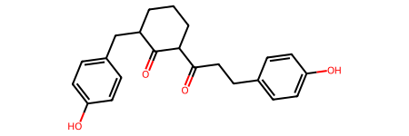

import polars as pl
import pandas as pd
import datamol as dm
import mols2gridUsing datamol - Python library that works with molecules
Current post
Key question: Will compound 3’s scaffold be similar to the scaffolds of any approved anti-infectives? - if similar ?implying it might be a good hit with different R-groups (?similar bacterial targets between cpd3 and other Rx anti-infectives, if so this can be backed up with experimental findings from the paper, or if different scaffolds, it might lead to a new type of anti-infective hits - consider comparing target binding site for anti-infective ?good for comparing protein-ligand interaction)
Tasks for current post: - Convert anti-infective compounds & compounds 1-3’s SMILES into SELFIES (more robust for ML models) - Get scaffolds of the anti-infective compounds from ChEMBL + compounds 1-3 - Align scaffolds of compounds 1-3 with other scaffolds from ChEMBL - Look for MCS (maximum common structure) - use RDKit (?as separate post) - Identify any similarities or differences between anti-infectives from ChEMBL and compound 3
Features to demonstrate: - Using Polars dataframe library along with datamol Python library (probably a small degree only, as datamol was likely written with Pandas in mind only) - Integrating experimental results from paper from PhD work into cheminformatics project (validation always crucial for computational predictions) - Advancing from pure organic chemistry and computational chemistry without code into utilising data science tools and packages by coding in Python to lead project direction
Data cleaning for ChEMBL anti-infectives
df_ai = pl.read_csv("chembl_anti-inf.csv", sep = ";")
df_ai
shape: (144, 29)
| Parent Molecule | Name | Synonyms | Research Codes | Phase | Drug Applicants | USAN Stem | USAN Year | USAN Definition | USAN Stem - Substem | First Approval | ATC Codes | Level 4 ATC Codes | Level 3 ATC Codes | Level 2 ATC Codes | Level 1 ATC Codes | Indication Class | Patent | Drug Type | Passes Rule of Five | First In Class | Chirality | Prodrug | Oral | Parenteral | Topical | Black Box | Availability Type | Smiles |
|---|---|---|---|---|---|---|---|---|---|---|---|---|---|---|---|---|---|---|---|---|---|---|---|---|---|---|---|---|
| str | str | str | str | f64 | str | str | str | str | str | str | str | str | str | str | str | str | str | str | i64 | i64 | str | i64 | i64 | i64 | i64 | i64 | str | str |
| "CHEMBL374975" | "FUSIDIC ACID" | "ANHYDROUS FUSI... | "CEM-102|NSC-56... | 4.0 | "" | "" | "1967" | "" | "" | "" | "J01XC01 | S01A... | "J01XC - Steroi... | "J01X - OTHER A... | "J01 - ANTIBACT... | "J - ANTIINFECT... | "Antibacterial" | "None" | "1:Synthetic Sm... | 0 | 0 | "Single Stereoi... | 0 | 0 | 0 | 0 | 0 | "Unknown" | "CC(=O)O[C@H]1C... |
| "CHEMBL130" | "CHLORAMPHENICO... | "9-HYDROXY-9-PH... | "NSC-16331|NSC-... | 4.0 | "Ivax Pharmaceu... | "" | "" | "" | "" | "1950" | "S01AA01 | S03A... | "S01AA - Antibi... | "S01A - ANTIINF... | "S01 - OPHTHALM... | "S - SENSORY OR... | "Antibacterial;... | "None" | "1:Synthetic Sm... | 1 | 0 | "Single Stereoi... | 0 | 1 | 1 | 1 | 0 | "Unknown" | "O=C(N[C@H](CO)... |
| "CHEMBL186" | "CEFEPIME" | "BMY-28142|CEFE... | "BMY-28142|J01D... | 4.0 | "Samson Medical... | "'cef-'" | "1987" | "cephalosporins... | "'cef-(cef-)'" | "1996" | "J01DE01" | "J01DE - Fourth... | "J01D - OTHER B... | "J01 - ANTIBACT... | "J - ANTIINFECT... | "Antibacterial" | "None" | "1:Synthetic Sm... | 1 | 0 | "Single Stereoi... | 0 | 0 | 1 | 0 | 0 | "Prescription O... | "CO/N=C(\C(=O)N... |
| "CHEMBL222645" | "FLOXACILLIN" | "ABBOFLOX|BRL 2... | "BRL 2039|BRL-2... | 4.0 | "" | "'-cillin'" | "1972" | "penicillins" | "'-cillin(-cill... | "" | "J01CF05" | "J01CF - Beta-l... | "J01C - BETA-LA... | "J01 - ANTIBACT... | "J - ANTIINFECT... | "Antibacterial" | "None" | "1:Synthetic Sm... | 1 | 0 | "Single Stereoi... | 0 | 0 | 0 | 0 | 0 | "Unknown" | "Cc1onc(-c2c(F)... |
| "CHEMBL2364632" | "SARECYCLINE" | "P-005672|P0056... | "P-005672|P0056... | 4.0 | "Almirall Llc" | "'-cycline'" | "2012" | "antibiotics (t... | "'-cycline(-cyc... | "2018" | "J01AA14" | "J01AA - Tetrac... | "J01A - TETRACY... | "J01 - ANTIBACT... | "J - ANTIINFECT... | "" | "US-8318706-B2" | "1:Synthetic Sm... | 1 | 0 | "Single Stereoi... | 0 | 1 | 0 | 0 | 0 | "Prescription O... | "CON(C)Cc1ccc(O... |
| "CHEMBL62193" | "SULFADIMETHOXI... | "Madribon|NSC-6... | "NSC-683544|NSC... | 4.0 | "" | "'sulfa-'" | "" | "antimicrobials... | "'sulfa-(sulfa-... | "" | "J01ED01" | "J01ED - Long-a... | "J01E - SULFONA... | "J01 - ANTIBACT... | "J - ANTIINFECT... | "" | "None" | "1:Synthetic Sm... | 1 | 0 | "Achiral Molecu... | 0 | 0 | 0 | 0 | 0 | "Withdrawn" | "COc1cc(NS(=O)(... |
| "CHEMBL2303613" | "CEFODIZIME" | "CEFODIZIME|CEF... | "HR 221|HR 221 ... | 4.0 | "" | "'cef-'" | "" | "cephalosporins... | "'cef-(cef-)'" | "" | "J01DD09" | "J01DD - Third-... | "J01D - OTHER B... | "J01 - ANTIBACT... | "J - ANTIINFECT... | "" | "None" | "1:Synthetic Sm... | 0 | 0 | "Single Stereoi... | 0 | 0 | 0 | 0 | 0 | "Unknown" | "CO/N=C(\C(=O)N... |
| "CHEMBL31" | "GATIFLOXACIN" | "AM-1155|BMS-20... | "AM-1155|BMS-20... | 4.0 | "Apotex Inc|Bri... | "'-oxacin'" | "1997" | "antibacterials... | "'-oxacin(-oxac... | "1999" | "S01AE06 | J01M... | "S01AE - Fluoro... | "S01A - ANTIINF... | "S01 - OPHTHALM... | "S - SENSORY OR... | "Antibacterial" | "None" | "1:Synthetic Sm... | 1 | 0 | "Racemic Mixtur... | 0 | 1 | 1 | 1 | 0 | "Prescription O... | "COc1c(N2CCNC(C... |
| "CHEMBL268869" | "SULFAMETHOXYPY... | "CL-13494|DEPOV... | "CL-13494|NSC-7... | 4.0 | "" | "'sulfa-'" | "" | "antimicrobials... | "'sulfa-(sulfa-... | "" | "J01ED05" | "J01ED - Long-a... | "J01E - SULFONA... | "J01 - ANTIBACT... | "J - ANTIINFECT... | "" | "None" | "1:Synthetic Sm... | 1 | 0 | "Achiral Molecu... | 0 | 0 | 0 | 0 | 0 | "Withdrawn" | "COc1ccc(NS(=O)... |
| "CHEMBL3039597" | "GENTAMICIN" | "GENTAMICIN|GEN... | "SCH-9724" | 4.0 | "Schering Corp ... | "'-micin'" | "1963" | "antibiotics (M... | "'-micin(-micin... | "1970" | "S01AA11 | S02A... | "S01AA - Antibi... | "S01A - ANTIINF... | "S01 - OPHTHALM... | "S - SENSORY OR... | "Antibacterial" | "None" | "1:Synthetic Sm... | 0 | 0 | "Unknown" | 0 | 0 | 1 | 1 | 1 | "Prescription O... | "CNC(C)[C@@H]1C... |
| "CHEMBL3182343" | "PIVAMPICILLIN" | "MK-191|PIVAMPI... | "MK-191" | 4.0 | "" | "'-cillin'" | "1970" | "penicillins" | "'-cillin(-cill... | "" | "J01CA02" | "J01CA - Penici... | "J01C - BETA-LA... | "J01 - ANTIBACT... | "J - ANTIINFECT... | "" | "None" | "1:Synthetic Sm... | 1 | 0 | "Single Stereoi... | 1 | 0 | 0 | 0 | 0 | "Unknown" | "CC(C)(C)C(=O)O... |
| "CHEMBL2146161" | "MIKAMYCIN" | "MIKAMYCIN|PRIS... | "RP 7293|RP-729... | 4.0 | "" | "'-mycin'" | "" | "antibiotics (S... | "'-mycin(-mycin... | "" | "J01FG01" | "J01FG - Strept... | "J01F - MACROLI... | "J01 - ANTIBACT... | "J - ANTIINFECT... | "" | "None" | "1:Synthetic Sm... | 0 | 0 | "Unknown" | 0 | 0 | 0 | 0 | 0 | "Unknown" | "CC1=C\[C@@H](O... |
| ... | ... | ... | ... | ... | ... | ... | ... | ... | ... | ... | ... | ... | ... | ... | ... | ... | ... | ... | ... | ... | ... | ... | ... | ... | ... | ... | ... | ... |
| "CHEMBL572" | "NITROFURANTOIN... | "BERKFURIN|CEDU... | "NSC-2107|NSC-4... | 4.0 | "Sun Pharmaceut... | "'-toin'" | "" | "antiepileptics... | "'-toin(-toin)'... | "1953" | "J01XE01 | J01X... | "J01XE - Nitrof... | "J01X - OTHER A... | "J01 - ANTIBACT... | "J - ANTIINFECT... | "Antibacterial ... | "None" | "1:Synthetic Sm... | 1 | 0 | "Achiral Molecu... | 0 | 1 | 1 | 0 | 0 | "Prescription O... | "O=C1CN(/N=C/c2... |
| "CHEMBL1596" | "CARBENICILLIN ... | "CARBENICILLIN ... | "" | 4.0 | "Pfizer Laborat... | "'-cillin'" | "1972" | "penicillins" | "'-cillin(-cill... | "1972" | "J01CA05" | "J01CA - Penici... | "J01C - BETA-LA... | "J01 - ANTIBACT... | "J - ANTIINFECT... | "Antibacterial" | "None" | "1:Synthetic Sm... | 1 | 0 | "Racemic Mixtur... | 1 | 1 | 0 | 0 | 0 | "Discontinued" | "CC1(C)S[C@@H]2... |
| "CHEMBL44354" | "CEFTAZIDIME" | "CEFTAZIDIME|CE... | "GR 20263|GR-20... | 4.0 | "Glaxosmithklin... | "'cef-'" | "1980" | "cephalosporins... | "'cef-(cef-)'" | "1985" | "J01DD02" | "J01DD - Third-... | "J01D - OTHER B... | "J01 - ANTIBACT... | "J - ANTIINFECT... | "Antibacterial" | "US-7112592-B2" | "1:Synthetic Sm... | 0 | 0 | "Single Stereoi... | 0 | 0 | 1 | 0 | 1 | "Prescription O... | "CC(C)(O/N=C(\C... |
| "CHEMBL29" | "BENZYLPENICILL... | "BENZYL PENICIL... | "J01CE01|NSC-19... | 4.0 | "Hq Specialty P... | "'-cillin'" | "" | "penicillins" | "'-cillin(-cill... | "1947" | "J01CE01 | S01A... | "J01CE - Beta-l... | "J01C - BETA-LA... | "J01 - ANTIBACT... | "J - ANTIINFECT... | "Antibacterial" | "None" | "1:Synthetic Sm... | 1 | 0 | "Single Stereoi... | 0 | 1 | 1 | 0 | 1 | "Prescription O... | "CC1(C)S[C@@H]2... |
| "CHEMBL277100" | "TEMAFLOXACIN" | "Omniflox|TEMAF... | "" | 4.0 | "" | "'-oxacin'" | "1988" | "antibacterials... | "'-oxacin(-oxac... | "1992" | "J01MA05" | "J01MA - Fluoro... | "J01M - QUINOLO... | "J01 - ANTIBACT... | "J - ANTIINFECT... | "Antibacterial ... | "None" | "1:Synthetic Sm... | 1 | 0 | "Racemic Mixtur... | 0 | 0 | 0 | 0 | 0 | "Withdrawn" | "CC1CN(c2cc3c(c... |
| "CHEMBL1731" | "MEZLOCILLIN" | "BAY-F-1353|BAY... | "BAY-F-1353" | 4.0 | "Bayer Pharmace... | "'-cillin'" | "1976" | "penicillins" | "'-cillin(-cill... | "1981" | "J01CA10" | "J01CA - Penici... | "J01C - BETA-LA... | "J01 - ANTIBACT... | "J - ANTIINFECT... | "Antibacterial" | "None" | "1:Synthetic Sm... | 0 | 0 | "Single Stereoi... | 0 | 0 | 1 | 0 | 0 | "Discontinued" | "CC1(C)S[C@@H]2... |
| "CHEMBL2105612" | "PROPICILLIN" | "(1-PHENOXYPROP... | "" | 4.0 | "" | "'-cillin'" | "" | "penicillins" | "'-cillin(-cill... | "" | "J01CE03" | "J01CE - Beta-l... | "J01C - BETA-LA... | "J01 - ANTIBACT... | "J - ANTIINFECT... | "" | "None" | "1:Synthetic Sm... | 1 | 0 | "Racemic Mixtur... | 0 | 0 | 0 | 0 | 0 | "Unknown" | "CCC(Oc1ccccc1)... |
| "CHEMBL8" | "CIPROFLOXACIN" | "BAY O 9867 FRE... | "BAY O 9867 FRE... | 4.0 | "Inforlife Sa|A... | "'-oxacin'" | "1987" | "antibacterials... | "'-oxacin(-oxac... | "1987" | "J01MA02 | S03A... | "J01MA - Fluoro... | "J01M - QUINOLO... | "J01 - ANTIBACT... | "J - ANTIINFECT... | "Antibacterial" | "US-8318817-B2" | "1:Synthetic Sm... | 1 | 0 | "Achiral Molecu... | 0 | 1 | 1 | 1 | 1 | "Prescription O... | "O=C(O)c1cn(C2C... |
| "CHEMBL9" | "NORFLOXACIN" | "Baccidal|CHIBR... | "MK-366|NSC-757... | 4.0 | "Merck Research... | "'-oxacin'" | "1984" | "antibacterials... | "'-oxacin(-oxac... | "1986" | "J01MA06 | S01A... | "J01MA - Fluoro... | "J01M - QUINOLO... | "J01 - ANTIBACT... | "J - ANTIINFECT... | "Antibacterial" | "None" | "1:Synthetic Sm... | 1 | 0 | "Achiral Molecu... | 0 | 1 | 0 | 1 | 1 | "Prescription O... | "CCn1cc(C(=O)O)... |
| "CHEMBL21" | "SULFANILAMIDE" | "ANILINE-P-SULF... | "NSC-7618" | 4.0 | "Mylan Specialt... | "'sulfa-'" | "" | "antimicrobials... | "'sulfa-(sulfa-... | "1985" | "D06BA05 | J01E... | "D06BA - Sulfon... | "D06B - CHEMOTH... | "D06 - ANTIBIOT... | "D - DERMATOLOG... | "" | "None" | "1:Synthetic Sm... | 1 | 0 | "Achiral Molecu... | 0 | 0 | 0 | 1 | 0 | "Prescription O... | "Nc1ccc(S(N)(=O... |
| "CHEMBL4" | "OFLOXACIN" | "DL-8280|EXOCIN... | "DL-8280|HOE 28... | 4.0 | "Bausch And Lom... | "'-oxacin'" | "1984" | "antibacterials... | "'-oxacin(-oxac... | "1990" | "J01MA01 | S02A... | "J01MA - Fluoro... | "J01M - QUINOLO... | "J01 - ANTIBACT... | "J - ANTIINFECT... | "Antibacterial" | "None" | "1:Synthetic Sm... | 1 | 0 | "Racemic Mixtur... | 0 | 1 | 1 | 1 | 1 | "Prescription O... | "CC1COc2c(N3CCN... |
| "CHEMBL530" | "AMDINOCILLIN" | "AMDINOCILLIN|C... | "FL 1060|FL-106... | 4.0 | "Hoffmann La Ro... | "'-cillin'" | "1981" | "penicillins" | "'-cillin(-cill... | "1984" | "J01CA11" | "J01CA - Penici... | "J01C - BETA-LA... | "J01 - ANTIBACT... | "J - ANTIINFECT... | "Antibacterial" | "None" | "1:Synthetic Sm... | 1 | 0 | "Single Stereoi... | 0 | 0 | 1 | 0 | 0 | "Discontinued" | "CC1(C)S[C@@H]2... |
print(df_ai.glimpse())Rows: 144
Columns: 29
$ Parent Molecule <Utf8> CHEMBL374975, CHEMBL130, CHEMBL186, CHEMBL222645, CHEMBL2364632, CHEMBL62193, CHEMBL2303613, CHEMBL31, CHEMBL268869, CHEMBL3039597
$ Name <Utf8> FUSIDIC ACID, CHLORAMPHENICOL, CEFEPIME, FLOXACILLIN, SARECYCLINE, SULFADIMETHOXINE, CEFODIZIME, GATIFLOXACIN, SULFAMETHOXYPYRIDAZINE, GENTAMICIN
$ Synonyms <Utf8> ANHYDROUS FUSIDIC ACID|CEM-102|FUCIDIN CAVIJECT|FUCITHALMIC|FUSIDATE|FUSIDIC ACID|NSC-56192|RAMYCIN|SQ 16,603|SQ-16603|TAKSTA, 9-HYDROXY-9-PHENYLXANTHENE|9-PHENYL-9H-XANTHEN-9-OL|AMPHICOL|BROCHLOR|BROLENE ANTIBIOTIC|CHLORAMPHENICOL|CHLOROFAIR|CHLOROPTIC|CHLOROPTIC S.O.P.|Chloramex|Chloramphenicol|Chlorbiotic|Chloromycetin|ECONOCHLOR|GOLDEN EYE ANTIBIOTIC|KEMICETINE|KLORAFECT|Kernispray|MYCHEL|Mychel-S|NSC-16331|NSC-3069|OPHTHOCHLOR|OPTOMYCIN|SNO PHENICOL|TUBILUX INFECTED EYES|Tevcocin|XANTHEN-9-OL, 9-PHENYL-, BMY-28142|CEFEPIME|J01DE01|Maxipime|RENAPIME|VNRX-5022, ABBOFLOX|BRL 2039|BRL-2039|CULPEN|FLOXACILLIN|FLOXACILLIN SODIUM|FLOXACILLIN SODIUM ANHYDROUS|FLUCLOMIX-250|FLUCLOMIX-500|FLUCLOXACILLIN|FLUCLOXACILLIN SODIUM|FLUCLOXACILLIN SODIUM ANHYDROUS|FLUCLOXACILLIN SODIUM MONOHYDRATE|FLUCLOXIN|Floxapen|GALFLOXIN|LADROPEN|NSC-277175|RIMAFLOX|STAFOXIL|STAPHLIPEN|STAPHYLEX|ZOXIN 250|ZOXIN 500, P-005672|P005672|SARECYCLINE, Madribon|NSC-683544|NSC-757860|SULFADIMETHOXINE|SULPHADIMETHOXINE, CEFODIZIME|CEFODIZIME DISODIUM|CEFODIZIME DISODIUM SALT|CEFODIZIME SODIUM|Cefodizime|HR 221|HR 221 [AS SODIUM]|HR-221|S 77 1221 B|S 77 1221 B [AS SODIUM]|S 77-1221B|S-77-1221-B|S-77-1221B|THR 221|THR 221 [AS SODIUM]|THR-221|TIMECEF, AM-1155|BMS-206584-01|BMS-20658401|GATIFLO|GATIFLOXACIN|GATIFLOXACIN (SESQUIHYDRATE)|GATIFLOXACIN ANHYDROUS|GATIFLOXACIN HYDRATE|GATIFLOXACIN SESQUIHYDRATE|NSC-758701|PD-135432|Tequin|ZYMAXID|ZYMER|Zymar, CL-13494|DEPOVERNIL|LEDERKYN|Midicel|NSC-757875|RETASULPHINE|SUCCINYLSULFATHI|SULFAMETHOXYPYRIDAZINE|SULFAMETHOXYPYRIDAZINUM|SULFASUXIDINE|SULPHAMETHOXYPYRIDAZINE, GENTAMICIN|GENTAMYCIN|LYRAMYCIN|OKSITSELANIM|SCH-9724|SEPTIGEN|Uromycine
$ Research Codes <Utf8> CEM-102|NSC-56192|SQ 16,603|SQ-16603, NSC-16331|NSC-3069, BMY-28142|J01DE01|VNRX-5022, BRL 2039|BRL-2039|NSC-277175, P-005672|P005672, NSC-683544|NSC-757860, HR 221|HR 221 [AS SODIUM]|HR-221|S 77 1221 B|S 77 1221 B [AS SODIUM]|S 77-1221B|S-77-1221-B|S-77-1221B|THR 221|THR 221 [AS SODIUM]|THR-221, AM-1155|BMS-206584-01|BMS-20658401|NSC-758701|PD-135432, CL-13494|NSC-757875, SCH-9724
$ Phase <Float64> 4.0, 4.0, 4.0, 4.0, 4.0, 4.0, 4.0, 4.0, 4.0, 4.0
$ Drug Applicants <Utf8> , Ivax Pharmaceuticals Inc Sub Teva Pharmaceuticals Usa|Armenpharm Ltd|Optopics Laboratories Corp|John J Ferrante|Parkedale Pharmaceuticals Inc|Alcon Laboratories Inc|Pharmafair Inc|Parke Davis Pharmaceutical Research Div Warner Lambert Co|Allergan Pharmaceutical|Akorn Operating Co Llc, Samson Medical Technologies Llc|Fosun Pharma Usa Inc|Sagent Pharmaceuticals Inc|Hospira Inc|B Braun Medical Inc|Acs Dobfar Spa|Astral Steritech Pvt Ltd|Qilu Pharmaceutical Co Ltd|Baxter Healthcare Corp, , Almirall Llc, , , Apotex Inc|Bristol Myers Squibb|Sandoz Inc|Allergan|Bristol Myers Squibb Co Pharmaceutical Research Institute|Allergan Inc|Akorn Operating Co Llc|Torrent Pharmaceuticals Ltd|Lupin Ltd|Rising Pharma Holdings Inc, , Schering Corp Sub Schering Plough Corp|Watson Laboratories Inc|Abbott Laboratories Pharmaceutical Products Div|Fougera Pharmaceuticals Inc|Bausch And Lomb Pharmaceuticals Inc|Taro Pharmaceuticals Usa Inc|Novartis Pharmaceuticals Corp|Allergan Pharmaceutical|Akorn Operating Co Llc|Cosette Pharmaceuticals Inc
$ USAN Stem <Utf8> , , 'cef-', '-cillin', '-cycline', 'sulfa-', 'cef-', '-oxacin', 'sulfa-', '-micin'
$ USAN Year <Utf8> 1967, , 1987, 1972, 2012, , , 1997, , 1963
$ USAN Definition <Utf8> , , cephalosporins, penicillins, antibiotics (tetracycline derivatives), antimicrobials (sulfonamides derivatives), cephalosporins, antibacterials (quinolone derivatives), antimicrobials (sulfonamides derivatives), antibiotics (Micromonospora strains)
$ USAN Stem - Substem <Utf8> , , 'cef-(cef-)', '-cillin(-cillin)', '-cycline(-cycline)', 'sulfa-(sulfa-)', 'cef-(cef-)', '-oxacin(-oxacin)', 'sulfa-(sulfa-)', '-micin(-micin)'
$ First Approval <Utf8> , 1950, 1996, , 2018, , , 1999, , 1970
$ ATC Codes <Utf8> J01XC01 | S01AA13 | D06AX01 | D09AA02, S01AA01 | S03AA08 | D06AX02 | G01AA05 | S02AA01 | D10AF03 | J01BA01, J01DE01, J01CF05, J01AA14, J01ED01, J01DD09, S01AE06 | J01MA16, J01ED05, S01AA11 | S02AA14 | J01GB03 | S03AA06 | D06AX07
$ Level 4 ATC Codes <Utf8> J01XC - Steroid antibacterials | S01AA - Antibiotics | D06AX - Other antibiotics for topical use | D09AA - Medicated dressings with antiinfectives, S01AA - Antibiotics | S03AA - Antiinfectives | D06AX - Other antibiotics for topical use | G01AA - Antibiotics | S02AA - Antiinfectives | D10AF - Antiinfectives for treatment of acne | J01BA - Amphenicols, J01DE - Fourth-generation cephalosporins, J01CF - Beta-lactamase resistant penicillins, J01AA - Tetracyclines, J01ED - Long-acting sulfonamides, J01DD - Third-generation cephalosporins, S01AE - Fluoroquinolones | J01MA - Fluoroquinolones, J01ED - Long-acting sulfonamides, S01AA - Antibiotics | S02AA - Antiinfectives | J01GB - Other aminoglycosides | S03AA - Antiinfectives | D06AX - Other antibiotics for topical use
$ Level 3 ATC Codes <Utf8> J01X - OTHER ANTIBACTERIALS | S01A - ANTIINFECTIVES | D06A - ANTIBIOTICS FOR TOPICAL USE | D09A - MEDICATED DRESSINGS, S01A - ANTIINFECTIVES | S03A - ANTIINFECTIVES | D06A - ANTIBIOTICS FOR TOPICAL USE | G01A - ANTIINFECTIVES AND ANTISEPTICS, EXCL. COMBINATIONS WITH CORTICOSTEROIDS | S02A - ANTIINFECTIVES | D10A - ANTI-ACNE PREPARATIONS FOR TOPICAL USE | J01B - AMPHENICOLS, J01D - OTHER BETA-LACTAM ANTIBACTERIALS, J01C - BETA-LACTAM ANTIBACTERIALS, PENICILLINS, J01A - TETRACYCLINES, J01E - SULFONAMIDES AND TRIMETHOPRIM, J01D - OTHER BETA-LACTAM ANTIBACTERIALS, S01A - ANTIINFECTIVES | J01M - QUINOLONE ANTIBACTERIALS, J01E - SULFONAMIDES AND TRIMETHOPRIM, S01A - ANTIINFECTIVES | S02A - ANTIINFECTIVES | J01G - AMINOGLYCOSIDE ANTIBACTERIALS | S03A - ANTIINFECTIVES | D06A - ANTIBIOTICS FOR TOPICAL USE
$ Level 2 ATC Codes <Utf8> J01 - ANTIBACTERIALS FOR SYSTEMIC USE | S01 - OPHTHALMOLOGICALS | D06 - ANTIBIOTICS AND CHEMOTHERAPEUTICS FOR DERMATOLOGICAL USE | D09 - MEDICATED DRESSINGS, S01 - OPHTHALMOLOGICALS | S03 - OPHTHALMOLOGICAL AND OTOLOGICAL PREPARATIONS | D06 - ANTIBIOTICS AND CHEMOTHERAPEUTICS FOR DERMATOLOGICAL USE | G01 - GYNECOLOGICAL ANTIINFECTIVES AND ANTISEPTICS | S02 - OTOLOGICALS | D10 - ANTI-ACNE PREPARATIONS | J01 - ANTIBACTERIALS FOR SYSTEMIC USE, J01 - ANTIBACTERIALS FOR SYSTEMIC USE, J01 - ANTIBACTERIALS FOR SYSTEMIC USE, J01 - ANTIBACTERIALS FOR SYSTEMIC USE, J01 - ANTIBACTERIALS FOR SYSTEMIC USE, J01 - ANTIBACTERIALS FOR SYSTEMIC USE, S01 - OPHTHALMOLOGICALS | J01 - ANTIBACTERIALS FOR SYSTEMIC USE, J01 - ANTIBACTERIALS FOR SYSTEMIC USE, S01 - OPHTHALMOLOGICALS | S02 - OTOLOGICALS | J01 - ANTIBACTERIALS FOR SYSTEMIC USE | S03 - OPHTHALMOLOGICAL AND OTOLOGICAL PREPARATIONS | D06 - ANTIBIOTICS AND CHEMOTHERAPEUTICS FOR DERMATOLOGICAL USE
$ Level 1 ATC Codes <Utf8> J - ANTIINFECTIVES FOR SYSTEMIC USE | S - SENSORY ORGANS | D - DERMATOLOGICALS | D - DERMATOLOGICALS, S - SENSORY ORGANS | S - SENSORY ORGANS | D - DERMATOLOGICALS | G - GENITO URINARY SYSTEM AND SEX HORMONES | S - SENSORY ORGANS | D - DERMATOLOGICALS | J - ANTIINFECTIVES FOR SYSTEMIC USE, J - ANTIINFECTIVES FOR SYSTEMIC USE, J - ANTIINFECTIVES FOR SYSTEMIC USE, J - ANTIINFECTIVES FOR SYSTEMIC USE, J - ANTIINFECTIVES FOR SYSTEMIC USE, J - ANTIINFECTIVES FOR SYSTEMIC USE, S - SENSORY ORGANS | J - ANTIINFECTIVES FOR SYSTEMIC USE, J - ANTIINFECTIVES FOR SYSTEMIC USE, S - SENSORY ORGANS | S - SENSORY ORGANS | J - ANTIINFECTIVES FOR SYSTEMIC USE | S - SENSORY ORGANS | D - DERMATOLOGICALS
$ Indication Class <Utf8> Antibacterial, Antibacterial; Antirickettsial, Antibacterial, Antibacterial, , , , Antibacterial, , Antibacterial
$ Patent <Utf8> None, None, None, None, US-8318706-B2, None, None, None, None, None
$ Drug Type <Utf8> 1:Synthetic Small Molecule, 1:Synthetic Small Molecule, 1:Synthetic Small Molecule, 1:Synthetic Small Molecule, 1:Synthetic Small Molecule, 1:Synthetic Small Molecule, 1:Synthetic Small Molecule, 1:Synthetic Small Molecule, 1:Synthetic Small Molecule, 1:Synthetic Small Molecule
$ Passes Rule of Five <Int64> 0, 1, 1, 1, 1, 1, 0, 1, 1, 0
$ First In Class <Int64> 0, 0, 0, 0, 0, 0, 0, 0, 0, 0
$ Chirality <Utf8> Single Stereoisomer, Single Stereoisomer, Single Stereoisomer, Single Stereoisomer, Single Stereoisomer, Achiral Molecule, Single Stereoisomer, Racemic Mixture, Achiral Molecule, Unknown
$ Prodrug <Int64> 0, 0, 0, 0, 0, 0, 0, 0, 0, 0
$ Oral <Int64> 0, 1, 0, 0, 1, 0, 0, 1, 0, 0
$ Parenteral <Int64> 0, 1, 1, 0, 0, 0, 0, 1, 0, 1
$ Topical <Int64> 0, 1, 0, 0, 0, 0, 0, 1, 0, 1
$ Black Box <Int64> 0, 0, 0, 0, 0, 0, 0, 0, 0, 1
$ Availability Type <Utf8> Unknown, Unknown, Prescription Only, Unknown, Prescription Only, Withdrawn, Unknown, Prescription Only, Withdrawn, Prescription Only
$ Smiles <Utf8> CC(=O)O[C@H]1C[C@@]2(C)[C@@H](C[C@@H](O)[C@H]3[C@@]4(C)CC[C@@H](O)[C@@H](C)[C@@H]4CC[C@@]32C)/C1=C(\CCC=C(C)C)C(=O)O, O=C(N[C@H](CO)[C@H](O)c1ccc([N+](=O)[O-])cc1)C(Cl)Cl, CO/N=C(\C(=O)N[C@@H]1C(=O)N2C(C(=O)[O-])=C(C[N+]3(C)CCCC3)CS[C@H]12)c1csc(N)n1, Cc1onc(-c2c(F)cccc2Cl)c1C(=O)N[C@@H]1C(=O)N2[C@@H]1SC(C)(C)[C@@H]2C(=O)O, CON(C)Cc1ccc(O)c2c1C[C@H]1C[C@H]3[C@H](N(C)C)C(O)=C(C(N)=O)C(=O)[C@@]3(O)C(O)=C1C2=O, COc1cc(NS(=O)(=O)c2ccc(N)cc2)nc(OC)n1, CO/N=C(\C(=O)N[C@@H]1C(=O)N2C(C(=O)O)=C(CSc3nc(C)c(CC(=O)O)s3)CS[C@H]12)c1csc(N)n1, COc1c(N2CCNC(C)C2)c(F)cc2c(=O)c(C(=O)O)cn(C3CC3)c12, COc1ccc(NS(=O)(=O)c2ccc(N)cc2)nn1, CNC(C)[C@@H]1CC[C@@H](N)[C@@H](O[C@H]2[C@H](O)[C@@H](O[C@H]3OC[C@](C)(O)[C@H](NC)[C@H]3O)[C@H](N)C[C@@H]2N)O1.CN[C@@H]1[C@@H](O)[C@@H](O[C@@H]2[C@@H](O)[C@H](O[C@H]3O[C@H](C(C)N)CC[C@H]3N)[C@@H](N)C[C@H]2N)OC[C@]1(C)O.CN[C@@H]1[C@@H](O)[C@@H](O[C@@H]2[C@@H](O)[C@H](O[C@H]3O[C@H](CN)CC[C@H]3N)[C@@H](N)C[C@H]2N)OC[C@]1(C)O
# Check availability types
df_ai.groupby("Availability Type").count()
shape: (4, 2)
| Availability Type | count |
|---|---|
| str | u32 |
| "Prescription O... | 72 |
| "Discontinued" | 36 |
| "Unknown" | 29 |
| "Withdrawn" | 7 |
# Selecting only compounds that are prescription-only meds
df_ai_rx = df_ai.filter(pl.col("Availability Type") == "Prescription Only")
df_ai_rx
shape: (72, 29)
| Parent Molecule | Name | Synonyms | Research Codes | Phase | Drug Applicants | USAN Stem | USAN Year | USAN Definition | USAN Stem - Substem | First Approval | ATC Codes | Level 4 ATC Codes | Level 3 ATC Codes | Level 2 ATC Codes | Level 1 ATC Codes | Indication Class | Patent | Drug Type | Passes Rule of Five | First In Class | Chirality | Prodrug | Oral | Parenteral | Topical | Black Box | Availability Type | Smiles |
|---|---|---|---|---|---|---|---|---|---|---|---|---|---|---|---|---|---|---|---|---|---|---|---|---|---|---|---|---|
| str | str | str | str | f64 | str | str | str | str | str | str | str | str | str | str | str | str | str | str | i64 | i64 | str | i64 | i64 | i64 | i64 | i64 | str | str |
| "CHEMBL186" | "CEFEPIME" | "BMY-28142|CEFE... | "BMY-28142|J01D... | 4.0 | "Samson Medical... | "'cef-'" | "1987" | "cephalosporins... | "'cef-(cef-)'" | "1996" | "J01DE01" | "J01DE - Fourth... | "J01D - OTHER B... | "J01 - ANTIBACT... | "J - ANTIINFECT... | "Antibacterial" | "None" | "1:Synthetic Sm... | 1 | 0 | "Single Stereoi... | 0 | 0 | 1 | 0 | 0 | "Prescription O... | "CO/N=C(\C(=O)N... |
| "CHEMBL2364632" | "SARECYCLINE" | "P-005672|P0056... | "P-005672|P0056... | 4.0 | "Almirall Llc" | "'-cycline'" | "2012" | "antibiotics (t... | "'-cycline(-cyc... | "2018" | "J01AA14" | "J01AA - Tetrac... | "J01A - TETRACY... | "J01 - ANTIBACT... | "J - ANTIINFECT... | "" | "US-8318706-B2" | "1:Synthetic Sm... | 1 | 0 | "Single Stereoi... | 0 | 1 | 0 | 0 | 0 | "Prescription O... | "CON(C)Cc1ccc(O... |
| "CHEMBL31" | "GATIFLOXACIN" | "AM-1155|BMS-20... | "AM-1155|BMS-20... | 4.0 | "Apotex Inc|Bri... | "'-oxacin'" | "1997" | "antibacterials... | "'-oxacin(-oxac... | "1999" | "S01AE06 | J01M... | "S01AE - Fluoro... | "S01A - ANTIINF... | "S01 - OPHTHALM... | "S - SENSORY OR... | "Antibacterial" | "None" | "1:Synthetic Sm... | 1 | 0 | "Racemic Mixtur... | 0 | 1 | 1 | 1 | 0 | "Prescription O... | "COc1c(N2CCNC(C... |
| "CHEMBL3039597" | "GENTAMICIN" | "GENTAMICIN|GEN... | "SCH-9724" | 4.0 | "Schering Corp ... | "'-micin'" | "1963" | "antibiotics (M... | "'-micin(-micin... | "1970" | "S01AA11 | S02A... | "S01AA - Antibi... | "S01A - ANTIINF... | "S01 - OPHTHALM... | "S - SENSORY OR... | "Antibacterial" | "None" | "1:Synthetic Sm... | 0 | 0 | "Unknown" | 0 | 0 | 1 | 1 | 1 | "Prescription O... | "CNC(C)[C@@H]1C... |
| "CHEMBL893" | "DICLOXACILLIN" | "BRL-1702|DICLO... | "BRL-1702|R-134... | 4.0 | "Teva Pharmaceu... | "'-cillin'" | "1965" | "penicillins" | "'-cillin(-cill... | "1968" | "J01CF01" | "J01CF - Beta-l... | "J01C - BETA-LA... | "J01 - ANTIBACT... | "J - ANTIINFECT... | "Antibacterial" | "None" | "1:Synthetic Sm... | 1 | 0 | "Single Stereoi... | 0 | 1 | 0 | 0 | 0 | "Prescription O... | "Cc1onc(-c2c(Cl... |
| "CHEMBL1449" | "TICARCILLIN" | "TICARCILLIN|Ti... | "" | 4.0 | "Glaxosmithklin... | "'-cillin'" | "1973" | "penicillins" | "'-cillin(-cill... | "1976" | "J01CA13" | "J01CA - Penici... | "J01C - BETA-LA... | "J01 - ANTIBACT... | "J - ANTIINFECT... | "Antibacterial" | "None" | "1:Synthetic Sm... | 1 | 0 | "Single Stereoi... | 0 | 0 | 1 | 0 | 0 | "Prescription O... | "CC1(C)S[C@@H]2... |
| "CHEMBL1220" | "TINIDAZOLE" | "CP-12,574|CP-1... | "CP-12,574|CP-1... | 4.0 | "Mission Pharma... | "'-nidazole'" | "1970" | "antiprotozoal ... | "'-nidazole(-ni... | "2004" | "P01AB02 | J01X... | "P01AB - Nitroi... | "P01A - AGENTS ... | "P01 - ANTIPROT... | "P - ANTIPARASI... | "Antiprotozoal" | "None" | "1:Synthetic Sm... | 1 | 0 | "Achiral Molecu... | 1 | 1 | 0 | 0 | 1 | "Prescription O... | "CCS(=O)(=O)CCn... |
| "CHEMBL501122" | "CEFTAROLINE FO... | "CEFTAROLINE FO... | "PPI-0903|TAK 5... | 4.0 | "Apotex Inc|All... | "'cef-; fos-'" | "2006" | "cephalosporins... | "'cef-(cef-); f... | "2010" | "J01DI02" | "J01DI - Other ... | "J01D - OTHER B... | "J01 - ANTIBACT... | "J - ANTIINFECT... | "" | "US-6417175-B1" | "1:Synthetic Sm... | 0 | 0 | "Single Stereoi... | 1 | 0 | 1 | 0 | 0 | "Prescription O... | "CCO/N=C(\C(=O)... |
| "CHEMBL137" | "METRONIDAZOLE" | "ACEA|ANABACT|B... | "BAY-5360|BAYER... | 4.0 | "Inforlife Sa|L... | "'-nidazole'" | "1962" | "antiprotozoal ... | "'-nidazole(-ni... | "1963" | "D06BX01 | P01A... | "D06BX - Other ... | "D06B - CHEMOTH... | "D06 - ANTIBIOT... | "D - DERMATOLOG... | "Antibacterial,... | "US-6881726-B2" | "1:Synthetic Sm... | 1 | 0 | "Achiral Molecu... | 0 | 1 | 1 | 1 | 1 | "Prescription O... | "Cc1ncc([N+](=O... |
| "CHEMBL376140" | "TIGECYCLINE" | "TIGECYCLINE|Ty... | "WAY-GAR-936" | 4.0 | "Apotex Inc|Fre... | "'-cycline'" | "2002" | "antibiotics (t... | "'-cycline(-cyc... | "2005" | "J01AA12" | "J01AA - Tetrac... | "J01A - TETRACY... | "J01 - ANTIBACT... | "J - ANTIINFECT... | "" | "US-7879828-B2" | "1:Synthetic Sm... | 0 | 0 | "Single Stereoi... | 0 | 0 | 1 | 0 | 1 | "Prescription O... | "CN(C)c1cc(NC(=... |
| "CHEMBL1741" | "CLARITHROMYCIN... | "6-O-METHYLERYT... | "A-56268|ABBOTT... | 4.0 | "Sunshine Lake ... | "'-mycin'" | "1988" | "antibiotics (S... | "'-mycin(-mycin... | "1991" | "J01FA09" | "J01FA - Macrol... | "J01F - MACROLI... | "J01 - ANTIBACT... | "J - ANTIINFECT... | "Antibacterial" | "US-7977488-B2" | "1:Synthetic Sm... | 0 | 0 | "Single Stereoi... | 0 | 1 | 0 | 0 | 0 | "Prescription O... | "CC[C@H]1OC(=O)... |
| "CHEMBL1747" | "TOBRAMYCIN" | "47663|Aktob|BE... | "47663|NSC-1805... | 4.0 | "Igi Laboratori... | "'-mycin'" | "1972" | "antibiotics (S... | "'-mycin(-mycin... | "1975" | "J01GB01 | S01A... | "J01GB - Other ... | "J01G - AMINOGL... | "J01 - ANTIBACT... | "J - ANTIINFECT... | "Antibacterial" | "US-6987094-B2" | "1:Synthetic Sm... | 0 | 0 | "Single Stereoi... | 0 | 0 | 1 | 1 | 1 | "Prescription O... | "NC[C@H]1O[C@H]... |
| ... | ... | ... | ... | ... | ... | ... | ... | ... | ... | ... | ... | ... | ... | ... | ... | ... | ... | ... | ... | ... | ... | ... | ... | ... | ... | ... | ... | ... |
| "CHEMBL404" | "TAZOBACTAM" | "CL 298,741|CL-... | "CL 298,741|CL-... | 4.0 | "Wytells Pharma... | "'-bactam'" | "1989" | "beta-lactamase... | "'-bactam(-bact... | "1993" | "J01CG02" | "J01CG - Beta-l... | "J01C - BETA-LA... | "J01 - ANTIBACT... | "J - ANTIINFECT... | "Inhibitor (bet... | "US-6900184-B2" | "1:Synthetic Sm... | 1 | 0 | "Single Stereoi... | 0 | 0 | 1 | 0 | 0 | "Prescription O... | "C[C@]1(Cn2ccnn... |
| "CHEMBL1689772" | "OMADACYCLINE" | "AMADACYCLINE|B... | "BAY 73-6944|PT... | 4.0 | "Paratek Pharma... | "'-cycline'" | "2009" | "antibiotics (t... | "'-cycline(-cyc... | "2018" | "J01AA15" | "J01AA - Tetrac... | "J01A - TETRACY... | "J01 - ANTIBACT... | "J - ANTIINFECT... | "" | "US-7326696-B2" | "1:Synthetic Sm... | 0 | 0 | "Single Stereoi... | 0 | 1 | 1 | 0 | 0 | "Prescription O... | "CN(C)c1cc(CNCC... |
| "CHEMBL3989974" | "CEFIDEROCOL" | "CEFIDEROCOL|GS... | "GSK2696266|S-6... | 4.0 | "Shionogi Inc" | "'cef-'" | "2017" | "cephalosporins... | "'cef-(cef-)'" | "2019" | "J01DI04" | "J01DI - Other ... | "J01D - OTHER B... | "J01 - ANTIBACT... | "J - ANTIINFECT... | "" | "US-9238657-B2" | "1:Synthetic Sm... | 0 | 0 | "Single Stereoi... | 0 | 0 | 1 | 0 | 0 | "Prescription O... | "CC(C)(O/N=C(\C... |
| "CHEMBL1435" | "CEFAZOLIN" | "CEFAZOLIN|CEPH... | "J01DB04|SK&F-4... | 4.0 | "Glaxosmithklin... | "'cef-'" | "1972" | "cephalosporins... | "'cef-(cef-)'" | "1973" | "J01DB04" | "J01DB - First-... | "J01D - OTHER B... | "J01 - ANTIBACT... | "J - ANTIINFECT... | "Antibacterial ... | "None" | "1:Synthetic Sm... | 0 | 0 | "Single Stereoi... | 0 | 0 | 1 | 0 | 0 | "Prescription O... | "Cc1nnc(SCC2=C(... |
| "CHEMBL3989751" | "NEOMYCIN" | "FRADIOMYCIN|KA... | "" | 4.0 | "Bayer Pharmace... | "'-mycin'" | "1966" | "antibiotics (S... | "'-mycin(-mycin... | "1957" | "R02AB01 | S01A... | "R02AB - Antibi... | "R02A - THROAT ... | "R02 - THROAT P... | "R - RESPIRATOR... | "" | "None" | "1:Synthetic Sm... | 0 | 0 | "Single Stereoi... | 0 | 1 | 0 | 1 | 1 | "Prescription O... | "" |
| "CHEMBL572" | "NITROFURANTOIN... | "BERKFURIN|CEDU... | "NSC-2107|NSC-4... | 4.0 | "Sun Pharmaceut... | "'-toin'" | "" | "antiepileptics... | "'-toin(-toin)'... | "1953" | "J01XE01 | J01X... | "J01XE - Nitrof... | "J01X - OTHER A... | "J01 - ANTIBACT... | "J - ANTIINFECT... | "Antibacterial ... | "None" | "1:Synthetic Sm... | 1 | 0 | "Achiral Molecu... | 0 | 1 | 1 | 0 | 0 | "Prescription O... | "O=C1CN(/N=C/c2... |
| "CHEMBL44354" | "CEFTAZIDIME" | "CEFTAZIDIME|CE... | "GR 20263|GR-20... | 4.0 | "Glaxosmithklin... | "'cef-'" | "1980" | "cephalosporins... | "'cef-(cef-)'" | "1985" | "J01DD02" | "J01DD - Third-... | "J01D - OTHER B... | "J01 - ANTIBACT... | "J - ANTIINFECT... | "Antibacterial" | "US-7112592-B2" | "1:Synthetic Sm... | 0 | 0 | "Single Stereoi... | 0 | 0 | 1 | 0 | 1 | "Prescription O... | "CC(C)(O/N=C(\C... |
| "CHEMBL29" | "BENZYLPENICILL... | "BENZYL PENICIL... | "J01CE01|NSC-19... | 4.0 | "Hq Specialty P... | "'-cillin'" | "" | "penicillins" | "'-cillin(-cill... | "1947" | "J01CE01 | S01A... | "J01CE - Beta-l... | "J01C - BETA-LA... | "J01 - ANTIBACT... | "J - ANTIINFECT... | "Antibacterial" | "None" | "1:Synthetic Sm... | 1 | 0 | "Single Stereoi... | 0 | 1 | 1 | 0 | 1 | "Prescription O... | "CC1(C)S[C@@H]2... |
| "CHEMBL8" | "CIPROFLOXACIN" | "BAY O 9867 FRE... | "BAY O 9867 FRE... | 4.0 | "Inforlife Sa|A... | "'-oxacin'" | "1987" | "antibacterials... | "'-oxacin(-oxac... | "1987" | "J01MA02 | S03A... | "J01MA - Fluoro... | "J01M - QUINOLO... | "J01 - ANTIBACT... | "J - ANTIINFECT... | "Antibacterial" | "US-8318817-B2" | "1:Synthetic Sm... | 1 | 0 | "Achiral Molecu... | 0 | 1 | 1 | 1 | 1 | "Prescription O... | "O=C(O)c1cn(C2C... |
| "CHEMBL9" | "NORFLOXACIN" | "Baccidal|CHIBR... | "MK-366|NSC-757... | 4.0 | "Merck Research... | "'-oxacin'" | "1984" | "antibacterials... | "'-oxacin(-oxac... | "1986" | "J01MA06 | S01A... | "J01MA - Fluoro... | "J01M - QUINOLO... | "J01 - ANTIBACT... | "J - ANTIINFECT... | "Antibacterial" | "None" | "1:Synthetic Sm... | 1 | 0 | "Achiral Molecu... | 0 | 1 | 0 | 1 | 1 | "Prescription O... | "CCn1cc(C(=O)O)... |
| "CHEMBL21" | "SULFANILAMIDE" | "ANILINE-P-SULF... | "NSC-7618" | 4.0 | "Mylan Specialt... | "'sulfa-'" | "" | "antimicrobials... | "'sulfa-(sulfa-... | "1985" | "D06BA05 | J01E... | "D06BA - Sulfon... | "D06B - CHEMOTH... | "D06 - ANTIBIOT... | "D - DERMATOLOG... | "" | "None" | "1:Synthetic Sm... | 1 | 0 | "Achiral Molecu... | 0 | 0 | 0 | 1 | 0 | "Prescription O... | "Nc1ccc(S(N)(=O... |
| "CHEMBL4" | "OFLOXACIN" | "DL-8280|EXOCIN... | "DL-8280|HOE 28... | 4.0 | "Bausch And Lom... | "'-oxacin'" | "1984" | "antibacterials... | "'-oxacin(-oxac... | "1990" | "J01MA01 | S02A... | "J01MA - Fluoro... | "J01M - QUINOLO... | "J01 - ANTIBACT... | "J - ANTIINFECT... | "Antibacterial" | "None" | "1:Synthetic Sm... | 1 | 0 | "Racemic Mixtur... | 0 | 1 | 1 | 1 | 1 | "Prescription O... | "CC1COc2c(N3CCN... |
# Quick overview of the statistics summary of the selected dataframe
df_ai_rx.describe()
shape: (7, 30)
| describe | Parent Molecule | Name | Synonyms | Research Codes | Phase | Drug Applicants | USAN Stem | USAN Year | USAN Definition | USAN Stem - Substem | First Approval | ATC Codes | Level 4 ATC Codes | Level 3 ATC Codes | Level 2 ATC Codes | Level 1 ATC Codes | Indication Class | Patent | Drug Type | Passes Rule of Five | First In Class | Chirality | Prodrug | Oral | Parenteral | Topical | Black Box | Availability Type | Smiles |
|---|---|---|---|---|---|---|---|---|---|---|---|---|---|---|---|---|---|---|---|---|---|---|---|---|---|---|---|---|---|
| str | str | str | str | str | f64 | str | str | str | str | str | str | str | str | str | str | str | str | str | str | f64 | f64 | str | f64 | f64 | f64 | f64 | f64 | str | str |
| "count" | "72" | "72" | "72" | "72" | 72.0 | "72" | "72" | "72" | "72" | "72" | "72" | "72" | "72" | "72" | "72" | "72" | "72" | "72" | "72" | 72.0 | 72.0 | "72" | 72.0 | 72.0 | 72.0 | 72.0 | 72.0 | "72" | "72" |
| "null_count" | "0" | "0" | "0" | "0" | 0.0 | "0" | "0" | "0" | "0" | "0" | "0" | "0" | "0" | "0" | "0" | "0" | "0" | "0" | "0" | 0.0 | 0.0 | "0" | 0.0 | 0.0 | 0.0 | 0.0 | 0.0 | "0" | "0" |
| "mean" | null | null | null | null | 4.0 | null | null | null | null | null | null | null | null | null | null | null | null | null | null | 0.583333 | 0.0 | null | 0.041667 | 0.611111 | 0.694444 | 0.25 | 0.333333 | null | null |
| "std" | null | null | null | null | 0.0 | null | null | null | null | null | null | null | null | null | null | null | null | null | null | 0.496466 | 0.0 | null | 0.201229 | 0.490919 | 0.463875 | 0.436051 | 0.474713 | null | null |
| "min" | "CHEMBL1082" | "AMIKACIN" | "47663|Aktob|BE... | "" | 4.0 | "Alkem Laborato... | "" | "" | "" | "" | "1941" | "A01AB23 | D10A... | "A01AB - Antiin... | "A01A - STOMATO... | "A01 - STOMATOL... | "A - ALIMENTARY... | "" | "None" | "1:Synthetic Sm... | 0.0 | 0.0 | "Achiral Molecu... | 0.0 | 0.0 | 0.0 | 0.0 | 0.0 | "Prescription O... | "" |
| "max" | "CHEMBL996" | "VANCOMYCIN" | "VANCOMYCIN|Van... | "WAY-GAR-936" | 4.0 | "Xiromed Pharma... | "'sulfa-'" | "2017" | "vancomycin-rel... | "'sulfa-(sulfa-... | "2019" | "S01AE06 | J01M... | "S01AE - Fluoro... | "S01A - ANTIINF... | "S01 - OPHTHALM... | "S - SENSORY OR... | "Inhibitor (bet... | "US-9238657-B2" | "1:Synthetic Sm... | 1.0 | 0.0 | "Unknown" | 1.0 | 1.0 | 1.0 | 1.0 | 1.0 | "Prescription O... | "O=C1CN(/N=C/c2... |
| "median" | null | null | null | null | 4.0 | null | null | null | null | null | null | null | null | null | null | null | null | null | null | 1.0 | 0.0 | null | 0.0 | 1.0 | 1.0 | 0.0 | 0.0 | null | null |
# Due to the error message when converting SMILES into SELFIES using datamol,
# Attempted to spot the missing/empty SMILES
df_ai_rx.filter(pl.col("Smiles") == "")
shape: (1, 29)
| Parent Molecule | Name | Synonyms | Research Codes | Phase | Drug Applicants | USAN Stem | USAN Year | USAN Definition | USAN Stem - Substem | First Approval | ATC Codes | Level 4 ATC Codes | Level 3 ATC Codes | Level 2 ATC Codes | Level 1 ATC Codes | Indication Class | Patent | Drug Type | Passes Rule of Five | First In Class | Chirality | Prodrug | Oral | Parenteral | Topical | Black Box | Availability Type | Smiles |
|---|---|---|---|---|---|---|---|---|---|---|---|---|---|---|---|---|---|---|---|---|---|---|---|---|---|---|---|---|
| str | str | str | str | f64 | str | str | str | str | str | str | str | str | str | str | str | str | str | str | i64 | i64 | str | i64 | i64 | i64 | i64 | i64 | str | str |
| "CHEMBL3989751" | "NEOMYCIN" | "FRADIOMYCIN|KA... | "" | 4.0 | "Bayer Pharmace... | "'-mycin'" | "1966" | "antibiotics (S... | "'-mycin(-mycin... | "1957" | "R02AB01 | S01A... | "R02AB - Antibi... | "R02A - THROAT ... | "R02 - THROAT P... | "R - RESPIRATOR... | "" | "None" | "1:Synthetic Sm... | 0 | 0 | "Single Stereoi... | 0 | 1 | 0 | 1 | 1 | "Prescription O... | "" |
Below example from StackOverflow - https://stackoverflow.com/questions/72292048/idiomatic-replacement-of-empty-string-with-pl-null-null-in-polars
# only_these = ['str1', 'str2']
# df.with_columns([
# pl.when(pl.col(only_these).str.lengths() == 0)
# .then(None)
# .otherwise(pl.col(only_these))
# .keep_name()
# ])# Canonical SMILES for neomycin - C1C(C(C(C(C1N)OC2C(C(C(C(O2)CN)O)O)N)OC3C(C(C(O3)CO)OC4C(C(C(C(O4)CN)O)O)N)O)O)N
# Extracted from PubChem (https://pubchem.ncbi.nlm.nih.gov/compound/Neomycin)
df_ai_rx = df_ai_rx.with_columns([
pl.when(pl.col("Smiles").str.lengths() == 0)
.then("C1C(C(C(C(C1N)OC2C(C(C(C(O2)CN)O)O)N)OC3C(C(C(O3)CO)OC4C(C(C(C(O4)CN)O)O)N)O)O)N")
.otherwise(pl.col("Smiles"))
.keep_name()
])
df_ai_rx
shape: (72, 29)
| Parent Molecule | Name | Synonyms | Research Codes | Phase | Drug Applicants | USAN Stem | USAN Year | USAN Definition | USAN Stem - Substem | First Approval | ATC Codes | Level 4 ATC Codes | Level 3 ATC Codes | Level 2 ATC Codes | Level 1 ATC Codes | Indication Class | Patent | Drug Type | Passes Rule of Five | First In Class | Chirality | Prodrug | Oral | Parenteral | Topical | Black Box | Availability Type | Smiles |
|---|---|---|---|---|---|---|---|---|---|---|---|---|---|---|---|---|---|---|---|---|---|---|---|---|---|---|---|---|
| str | str | str | str | f64 | str | str | str | str | str | str | str | str | str | str | str | str | str | str | i64 | i64 | str | i64 | i64 | i64 | i64 | i64 | str | str |
| "CHEMBL186" | "CEFEPIME" | "BMY-28142|CEFE... | "BMY-28142|J01D... | 4.0 | "Samson Medical... | "'cef-'" | "1987" | "cephalosporins... | "'cef-(cef-)'" | "1996" | "J01DE01" | "J01DE - Fourth... | "J01D - OTHER B... | "J01 - ANTIBACT... | "J - ANTIINFECT... | "Antibacterial" | "None" | "1:Synthetic Sm... | 1 | 0 | "Single Stereoi... | 0 | 0 | 1 | 0 | 0 | "Prescription O... | "CO/N=C(\C(=O)N... |
| "CHEMBL2364632" | "SARECYCLINE" | "P-005672|P0056... | "P-005672|P0056... | 4.0 | "Almirall Llc" | "'-cycline'" | "2012" | "antibiotics (t... | "'-cycline(-cyc... | "2018" | "J01AA14" | "J01AA - Tetrac... | "J01A - TETRACY... | "J01 - ANTIBACT... | "J - ANTIINFECT... | "" | "US-8318706-B2" | "1:Synthetic Sm... | 1 | 0 | "Single Stereoi... | 0 | 1 | 0 | 0 | 0 | "Prescription O... | "CON(C)Cc1ccc(O... |
| "CHEMBL31" | "GATIFLOXACIN" | "AM-1155|BMS-20... | "AM-1155|BMS-20... | 4.0 | "Apotex Inc|Bri... | "'-oxacin'" | "1997" | "antibacterials... | "'-oxacin(-oxac... | "1999" | "S01AE06 | J01M... | "S01AE - Fluoro... | "S01A - ANTIINF... | "S01 - OPHTHALM... | "S - SENSORY OR... | "Antibacterial" | "None" | "1:Synthetic Sm... | 1 | 0 | "Racemic Mixtur... | 0 | 1 | 1 | 1 | 0 | "Prescription O... | "COc1c(N2CCNC(C... |
| "CHEMBL3039597" | "GENTAMICIN" | "GENTAMICIN|GEN... | "SCH-9724" | 4.0 | "Schering Corp ... | "'-micin'" | "1963" | "antibiotics (M... | "'-micin(-micin... | "1970" | "S01AA11 | S02A... | "S01AA - Antibi... | "S01A - ANTIINF... | "S01 - OPHTHALM... | "S - SENSORY OR... | "Antibacterial" | "None" | "1:Synthetic Sm... | 0 | 0 | "Unknown" | 0 | 0 | 1 | 1 | 1 | "Prescription O... | "CNC(C)[C@@H]1C... |
| "CHEMBL893" | "DICLOXACILLIN" | "BRL-1702|DICLO... | "BRL-1702|R-134... | 4.0 | "Teva Pharmaceu... | "'-cillin'" | "1965" | "penicillins" | "'-cillin(-cill... | "1968" | "J01CF01" | "J01CF - Beta-l... | "J01C - BETA-LA... | "J01 - ANTIBACT... | "J - ANTIINFECT... | "Antibacterial" | "None" | "1:Synthetic Sm... | 1 | 0 | "Single Stereoi... | 0 | 1 | 0 | 0 | 0 | "Prescription O... | "Cc1onc(-c2c(Cl... |
| "CHEMBL1449" | "TICARCILLIN" | "TICARCILLIN|Ti... | "" | 4.0 | "Glaxosmithklin... | "'-cillin'" | "1973" | "penicillins" | "'-cillin(-cill... | "1976" | "J01CA13" | "J01CA - Penici... | "J01C - BETA-LA... | "J01 - ANTIBACT... | "J - ANTIINFECT... | "Antibacterial" | "None" | "1:Synthetic Sm... | 1 | 0 | "Single Stereoi... | 0 | 0 | 1 | 0 | 0 | "Prescription O... | "CC1(C)S[C@@H]2... |
| "CHEMBL1220" | "TINIDAZOLE" | "CP-12,574|CP-1... | "CP-12,574|CP-1... | 4.0 | "Mission Pharma... | "'-nidazole'" | "1970" | "antiprotozoal ... | "'-nidazole(-ni... | "2004" | "P01AB02 | J01X... | "P01AB - Nitroi... | "P01A - AGENTS ... | "P01 - ANTIPROT... | "P - ANTIPARASI... | "Antiprotozoal" | "None" | "1:Synthetic Sm... | 1 | 0 | "Achiral Molecu... | 1 | 1 | 0 | 0 | 1 | "Prescription O... | "CCS(=O)(=O)CCn... |
| "CHEMBL501122" | "CEFTAROLINE FO... | "CEFTAROLINE FO... | "PPI-0903|TAK 5... | 4.0 | "Apotex Inc|All... | "'cef-; fos-'" | "2006" | "cephalosporins... | "'cef-(cef-); f... | "2010" | "J01DI02" | "J01DI - Other ... | "J01D - OTHER B... | "J01 - ANTIBACT... | "J - ANTIINFECT... | "" | "US-6417175-B1" | "1:Synthetic Sm... | 0 | 0 | "Single Stereoi... | 1 | 0 | 1 | 0 | 0 | "Prescription O... | "CCO/N=C(\C(=O)... |
| "CHEMBL137" | "METRONIDAZOLE" | "ACEA|ANABACT|B... | "BAY-5360|BAYER... | 4.0 | "Inforlife Sa|L... | "'-nidazole'" | "1962" | "antiprotozoal ... | "'-nidazole(-ni... | "1963" | "D06BX01 | P01A... | "D06BX - Other ... | "D06B - CHEMOTH... | "D06 - ANTIBIOT... | "D - DERMATOLOG... | "Antibacterial,... | "US-6881726-B2" | "1:Synthetic Sm... | 1 | 0 | "Achiral Molecu... | 0 | 1 | 1 | 1 | 1 | "Prescription O... | "Cc1ncc([N+](=O... |
| "CHEMBL376140" | "TIGECYCLINE" | "TIGECYCLINE|Ty... | "WAY-GAR-936" | 4.0 | "Apotex Inc|Fre... | "'-cycline'" | "2002" | "antibiotics (t... | "'-cycline(-cyc... | "2005" | "J01AA12" | "J01AA - Tetrac... | "J01A - TETRACY... | "J01 - ANTIBACT... | "J - ANTIINFECT... | "" | "US-7879828-B2" | "1:Synthetic Sm... | 0 | 0 | "Single Stereoi... | 0 | 0 | 1 | 0 | 1 | "Prescription O... | "CN(C)c1cc(NC(=... |
| "CHEMBL1741" | "CLARITHROMYCIN... | "6-O-METHYLERYT... | "A-56268|ABBOTT... | 4.0 | "Sunshine Lake ... | "'-mycin'" | "1988" | "antibiotics (S... | "'-mycin(-mycin... | "1991" | "J01FA09" | "J01FA - Macrol... | "J01F - MACROLI... | "J01 - ANTIBACT... | "J - ANTIINFECT... | "Antibacterial" | "US-7977488-B2" | "1:Synthetic Sm... | 0 | 0 | "Single Stereoi... | 0 | 1 | 0 | 0 | 0 | "Prescription O... | "CC[C@H]1OC(=O)... |
| "CHEMBL1747" | "TOBRAMYCIN" | "47663|Aktob|BE... | "47663|NSC-1805... | 4.0 | "Igi Laboratori... | "'-mycin'" | "1972" | "antibiotics (S... | "'-mycin(-mycin... | "1975" | "J01GB01 | S01A... | "J01GB - Other ... | "J01G - AMINOGL... | "J01 - ANTIBACT... | "J - ANTIINFECT... | "Antibacterial" | "US-6987094-B2" | "1:Synthetic Sm... | 0 | 0 | "Single Stereoi... | 0 | 0 | 1 | 1 | 1 | "Prescription O... | "NC[C@H]1O[C@H]... |
| ... | ... | ... | ... | ... | ... | ... | ... | ... | ... | ... | ... | ... | ... | ... | ... | ... | ... | ... | ... | ... | ... | ... | ... | ... | ... | ... | ... | ... |
| "CHEMBL404" | "TAZOBACTAM" | "CL 298,741|CL-... | "CL 298,741|CL-... | 4.0 | "Wytells Pharma... | "'-bactam'" | "1989" | "beta-lactamase... | "'-bactam(-bact... | "1993" | "J01CG02" | "J01CG - Beta-l... | "J01C - BETA-LA... | "J01 - ANTIBACT... | "J - ANTIINFECT... | "Inhibitor (bet... | "US-6900184-B2" | "1:Synthetic Sm... | 1 | 0 | "Single Stereoi... | 0 | 0 | 1 | 0 | 0 | "Prescription O... | "C[C@]1(Cn2ccnn... |
| "CHEMBL1689772" | "OMADACYCLINE" | "AMADACYCLINE|B... | "BAY 73-6944|PT... | 4.0 | "Paratek Pharma... | "'-cycline'" | "2009" | "antibiotics (t... | "'-cycline(-cyc... | "2018" | "J01AA15" | "J01AA - Tetrac... | "J01A - TETRACY... | "J01 - ANTIBACT... | "J - ANTIINFECT... | "" | "US-7326696-B2" | "1:Synthetic Sm... | 0 | 0 | "Single Stereoi... | 0 | 1 | 1 | 0 | 0 | "Prescription O... | "CN(C)c1cc(CNCC... |
| "CHEMBL3989974" | "CEFIDEROCOL" | "CEFIDEROCOL|GS... | "GSK2696266|S-6... | 4.0 | "Shionogi Inc" | "'cef-'" | "2017" | "cephalosporins... | "'cef-(cef-)'" | "2019" | "J01DI04" | "J01DI - Other ... | "J01D - OTHER B... | "J01 - ANTIBACT... | "J - ANTIINFECT... | "" | "US-9238657-B2" | "1:Synthetic Sm... | 0 | 0 | "Single Stereoi... | 0 | 0 | 1 | 0 | 0 | "Prescription O... | "CC(C)(O/N=C(\C... |
| "CHEMBL1435" | "CEFAZOLIN" | "CEFAZOLIN|CEPH... | "J01DB04|SK&F-4... | 4.0 | "Glaxosmithklin... | "'cef-'" | "1972" | "cephalosporins... | "'cef-(cef-)'" | "1973" | "J01DB04" | "J01DB - First-... | "J01D - OTHER B... | "J01 - ANTIBACT... | "J - ANTIINFECT... | "Antibacterial ... | "None" | "1:Synthetic Sm... | 0 | 0 | "Single Stereoi... | 0 | 0 | 1 | 0 | 0 | "Prescription O... | "Cc1nnc(SCC2=C(... |
| "CHEMBL3989751" | "NEOMYCIN" | "FRADIOMYCIN|KA... | "" | 4.0 | "Bayer Pharmace... | "'-mycin'" | "1966" | "antibiotics (S... | "'-mycin(-mycin... | "1957" | "R02AB01 | S01A... | "R02AB - Antibi... | "R02A - THROAT ... | "R02 - THROAT P... | "R - RESPIRATOR... | "" | "None" | "1:Synthetic Sm... | 0 | 0 | "Single Stereoi... | 0 | 1 | 0 | 1 | 1 | "Prescription O... | "C1C(C(C(C(C1N)... |
| "CHEMBL572" | "NITROFURANTOIN... | "BERKFURIN|CEDU... | "NSC-2107|NSC-4... | 4.0 | "Sun Pharmaceut... | "'-toin'" | "" | "antiepileptics... | "'-toin(-toin)'... | "1953" | "J01XE01 | J01X... | "J01XE - Nitrof... | "J01X - OTHER A... | "J01 - ANTIBACT... | "J - ANTIINFECT... | "Antibacterial ... | "None" | "1:Synthetic Sm... | 1 | 0 | "Achiral Molecu... | 0 | 1 | 1 | 0 | 0 | "Prescription O... | "O=C1CN(/N=C/c2... |
| "CHEMBL44354" | "CEFTAZIDIME" | "CEFTAZIDIME|CE... | "GR 20263|GR-20... | 4.0 | "Glaxosmithklin... | "'cef-'" | "1980" | "cephalosporins... | "'cef-(cef-)'" | "1985" | "J01DD02" | "J01DD - Third-... | "J01D - OTHER B... | "J01 - ANTIBACT... | "J - ANTIINFECT... | "Antibacterial" | "US-7112592-B2" | "1:Synthetic Sm... | 0 | 0 | "Single Stereoi... | 0 | 0 | 1 | 0 | 1 | "Prescription O... | "CC(C)(O/N=C(\C... |
| "CHEMBL29" | "BENZYLPENICILL... | "BENZYL PENICIL... | "J01CE01|NSC-19... | 4.0 | "Hq Specialty P... | "'-cillin'" | "" | "penicillins" | "'-cillin(-cill... | "1947" | "J01CE01 | S01A... | "J01CE - Beta-l... | "J01C - BETA-LA... | "J01 - ANTIBACT... | "J - ANTIINFECT... | "Antibacterial" | "None" | "1:Synthetic Sm... | 1 | 0 | "Single Stereoi... | 0 | 1 | 1 | 0 | 1 | "Prescription O... | "CC1(C)S[C@@H]2... |
| "CHEMBL8" | "CIPROFLOXACIN" | "BAY O 9867 FRE... | "BAY O 9867 FRE... | 4.0 | "Inforlife Sa|A... | "'-oxacin'" | "1987" | "antibacterials... | "'-oxacin(-oxac... | "1987" | "J01MA02 | S03A... | "J01MA - Fluoro... | "J01M - QUINOLO... | "J01 - ANTIBACT... | "J - ANTIINFECT... | "Antibacterial" | "US-8318817-B2" | "1:Synthetic Sm... | 1 | 0 | "Achiral Molecu... | 0 | 1 | 1 | 1 | 1 | "Prescription O... | "O=C(O)c1cn(C2C... |
| "CHEMBL9" | "NORFLOXACIN" | "Baccidal|CHIBR... | "MK-366|NSC-757... | 4.0 | "Merck Research... | "'-oxacin'" | "1984" | "antibacterials... | "'-oxacin(-oxac... | "1986" | "J01MA06 | S01A... | "J01MA - Fluoro... | "J01M - QUINOLO... | "J01 - ANTIBACT... | "J - ANTIINFECT... | "Antibacterial" | "None" | "1:Synthetic Sm... | 1 | 0 | "Achiral Molecu... | 0 | 1 | 0 | 1 | 1 | "Prescription O... | "CCn1cc(C(=O)O)... |
| "CHEMBL21" | "SULFANILAMIDE" | "ANILINE-P-SULF... | "NSC-7618" | 4.0 | "Mylan Specialt... | "'sulfa-'" | "" | "antimicrobials... | "'sulfa-(sulfa-... | "1985" | "D06BA05 | J01E... | "D06BA - Sulfon... | "D06B - CHEMOTH... | "D06 - ANTIBIOT... | "D - DERMATOLOG... | "" | "None" | "1:Synthetic Sm... | 1 | 0 | "Achiral Molecu... | 0 | 0 | 0 | 1 | 0 | "Prescription O... | "Nc1ccc(S(N)(=O... |
| "CHEMBL4" | "OFLOXACIN" | "DL-8280|EXOCIN... | "DL-8280|HOE 28... | 4.0 | "Bausch And Lom... | "'-oxacin'" | "1984" | "antibacterials... | "'-oxacin(-oxac... | "1990" | "J01MA01 | S02A... | "J01MA - Fluoro... | "J01M - QUINOLO... | "J01 - ANTIBACT... | "J - ANTIINFECT... | "Antibacterial" | "None" | "1:Synthetic Sm... | 1 | 0 | "Racemic Mixtur... | 0 | 1 | 1 | 1 | 1 | "Prescription O... | "CC1COc2c(N3CCN... |
# Keeping only selected columns with information needed for later use
df_ai_rx = df_ai_rx.select(["Smiles", "Name", "USAN Definition", "Level 4 ATC Codes"])
df_ai_rx.head()
shape: (5, 4)
| Smiles | Name | USAN Definition | Level 4 ATC Codes |
|---|---|---|---|
| str | str | str | str |
| "CO/N=C(\C(=O)N... | "CEFEPIME" | "cephalosporins... | "J01DE - Fourth... |
| "CON(C)Cc1ccc(O... | "SARECYCLINE" | "antibiotics (t... | "J01AA - Tetrac... |
| "COc1c(N2CCNC(C... | "GATIFLOXACIN" | "antibacterials... | "S01AE - Fluoro... |
| "CNC(C)[C@@H]1C... | "GENTAMICIN" | "antibiotics (M... | "S01AA - Antibi... |
| "Cc1onc(-c2c(Cl... | "DICLOXACILLIN" | "penicillins" | "J01CF - Beta-l... |
# Change column name of "Smiles" - to ensure the _preprocess function will work
# as smiles_column = "smiles" with lowercase "s" - will be using this function
# to cater for the 3 FtsZ compounds as well
df_ai_rx = df_ai_rx.rename({"Smiles": "smiles", "Name": "names"})
df_ai_rx.head()
shape: (5, 4)
| smiles | names | USAN Definition | Level 4 ATC Codes |
|---|---|---|---|
| str | str | str | str |
| "CO/N=C(\C(=O)N... | "CEFEPIME" | "cephalosporins... | "J01DE - Fourth... |
| "CON(C)Cc1ccc(O... | "SARECYCLINE" | "antibiotics (t... | "J01AA - Tetrac... |
| "COc1c(N2CCNC(C... | "GATIFLOXACIN" | "antibacterials... | "S01AE - Fluoro... |
| "CNC(C)[C@@H]1C... | "GENTAMICIN" | "antibiotics (M... | "S01AA - Antibi... |
| "Cc1onc(-c2c(Cl... | "DICLOXACILLIN" | "penicillins" | "J01CF - Beta-l... |
# Convert all compounds to lowercases
df_ai_rx = df_ai_rx.with_columns(pl.col("names").str.to_lowercase())
df_ai_rx.head()
shape: (5, 4)
| smiles | names | USAN Definition | Level 4 ATC Codes |
|---|---|---|---|
| str | str | str | str |
| "CO/N=C(\C(=O)N... | "cefepime" | "cephalosporins... | "J01DE - Fourth... |
| "CON(C)Cc1ccc(O... | "sarecycline" | "antibiotics (t... | "J01AA - Tetrac... |
| "COc1c(N2CCNC(C... | "gatifloxacin" | "antibacterials... | "S01AE - Fluoro... |
| "CNC(C)[C@@H]1C... | "gentamicin" | "antibiotics (M... | "S01AA - Antibi... |
| "Cc1onc(-c2c(Cl... | "dicloxacillin" | "penicillins" | "J01CF - Beta-l... |
list(df_ai_rx["USAN Definition"])['cephalosporins',
'antibiotics (tetracycline derivatives)',
'antibacterials (quinolone derivatives)',
'antibiotics (Micromonospora strains)',
'penicillins',
'penicillins',
'antiprotozoal substances (metronidazole type)',
'cephalosporins; phosphoro-derivatives',
'antiprotozoal substances (metronidazole type)',
'antibiotics (tetracycline derivatives)',
'antibiotics (Streptomyces strain)',
'antibiotics (Streptomyces strain)',
'antibiotics (tetracycline derivatives)',
'cephalosporins',
'cephalosporins',
'antibiotics (Streptomyces strain)',
'',
'antibiotics obtained from Streptomyces kanamyceticus (related to kanamycin)',
'cephalosporins',
'penicillins',
'antibiotics (tetracycline derivatives)',
'antibiotics (Streptomyces strain)',
'antibiotics (tetracycline derivatives)',
'antibiotics (Micromonospora strains)',
'penicillins',
'penicillins',
'antibiotics (Streptomyces strain)',
'antibiotics (tetracycline derivatives)',
'antibiotics (Streptomyces strain)',
'antibiotics (Streptomyces strain)',
'cephalosporins',
'antimicrobials (sulfonamides derivatives)',
'antibiotics (tetracycline derivatives)',
'antimicrobials (sulfonamides derivatives)',
'penicillins',
'cephalosporins',
'cephalosporins',
'antibiotics (Streptomyces strain)',
'antibacterial antibiotics, carbapenem derivatives',
'antibacterials (quinolone derivatives)',
'antibiotics (Streptomyces strain)',
'antibacterials (trimethoprim type), dihydrofolate reductase (DHFR) inhibitors',
'antibacterials, pleuromulin derivatives',
'cephalosporins',
'antibacterials (quinolone derivatives)',
'penicillins',
'vancomycin-related compounds',
'antibiotics (Streptomyces strain)',
'local anesthetics; penicillins',
'antibacterial antibiotics, carbapenem derivatives',
'cephalosporins',
'',
'antibacterials (quinolone derivatives)',
'phosphoro-derivatives; antibiotics (Streptomyces strain)',
'antibacterials (quinolone derivatives)',
'beta-lactamase inhibitors',
'antibacterial antibiotics, carbapenem derivatives',
'cephalosporins',
'penicillins',
'oxazolidinone antibacterials',
'beta-lactamase inhibitors',
'antibiotics (tetracycline derivatives)',
'cephalosporins',
'cephalosporins',
'antibiotics (Streptomyces strain)',
'antiepileptics (hydantoin derivatives)',
'cephalosporins',
'penicillins',
'antibacterials (quinolone derivatives)',
'antibacterials (quinolone derivatives)',
'antimicrobials (sulfonamides derivatives)',
'antibacterials (quinolone derivatives)']# Convert polars dataframe into a pandas dataframe (as datamol likely only compatible with Pandas for now)
df_ai_pd = df_ai_rx.to_pandas()
df_ai_pd| smiles | names | USAN Definition | Level 4 ATC Codes | |
|---|---|---|---|---|
| 0 | CO/N=C(\C(=O)N[C@@H]1C(=O)N2C(C(=O)[O-])=C(C[N... | cefepime | cephalosporins | J01DE - Fourth-generation cephalosporins |
| 1 | CON(C)Cc1ccc(O)c2c1C[C@H]1C[C@H]3[C@H](N(C)C)C... | sarecycline | antibiotics (tetracycline derivatives) | J01AA - Tetracyclines |
| 2 | COc1c(N2CCNC(C)C2)c(F)cc2c(=O)c(C(=O)O)cn(C3CC... | gatifloxacin | antibacterials (quinolone derivatives) | S01AE - Fluoroquinolones | J01MA - Fluoroquino... |
| 3 | CNC(C)[C@@H]1CC[C@@H](N)[C@@H](O[C@H]2[C@H](O)... | gentamicin | antibiotics (Micromonospora strains) | S01AA - Antibiotics | S02AA - Antiinfectives |... |
| 4 | Cc1onc(-c2c(Cl)cccc2Cl)c1C(=O)N[C@@H]1C(=O)N2[... | dicloxacillin | penicillins | J01CF - Beta-lactamase resistant penicillins |
| ... | ... | ... | ... | ... |
| 67 | CC1(C)S[C@@H]2[C@H](NC(=O)Cc3ccccc3)C(=O)N2[C@... | benzylpenicillin | penicillins | J01CE - Beta-lactamase sensitive penicillins |... |
| 68 | O=C(O)c1cn(C2CC2)c2cc(N3CCNCC3)c(F)cc2c1=O | ciprofloxacin | antibacterials (quinolone derivatives) | J01MA - Fluoroquinolones | S03AA - Antiinfecti... |
| 69 | CCn1cc(C(=O)O)c(=O)c2cc(F)c(N3CCNCC3)cc21 | norfloxacin | antibacterials (quinolone derivatives) | J01MA - Fluoroquinolones | S01AE - Fluoroquino... |
| 70 | Nc1ccc(S(N)(=O)=O)cc1 | sulfanilamide | antimicrobials (sulfonamides derivatives) | D06BA - Sulfonamides | J01EB - Short-acting su... |
| 71 | CC1COc2c(N3CCN(C)CC3)c(F)cc3c(=O)c(C(=O)O)cn1c23 | ofloxacin | antibacterials (quinolone derivatives) | J01MA - Fluoroquinolones | S02AA - Antiinfecti... |
72 rows × 4 columns
# Check the dataframe has been converted from Polars to Pandas
type(df_ai_pd)pandas.core.frame.DataFramePre-processing and standardising molecules
# Pre-process molecules using _preprocess function - adapted with courtesy from datamol.io
smiles_column = "smiles"
dm.disable_rdkit_log()
def _preprocess(row):
mol = dm.to_mol(row[smiles_column], ordered=True)
mol = dm.fix_mol(mol)
mol = dm.sanitize_mol(mol, sanifix=True, charge_neutral=False)
mol = dm.standardize_mol(
mol,
disconnect_metals=False,
normalize=True,
reionize=True,
uncharge=False,
stereo=True,
)
row["standard_smiles"] = dm.standardize_smiles(dm.to_smiles(mol))
row["selfies"] = dm.to_selfies(mol)
row["inchi"] = dm.to_inchi(mol)
row["inchikey"] = dm.to_inchikey(mol)
return row# Issue found with one compound that acutally had no SMILES recorded in the dataframe!
# **Fixed by adding the missing SMILES for neomycin**
# Two methods to convert SMILES into SELFIES
# Method one - using lambda function:
# df_ai_pd["selfies"] = df_ai_pd["Smiles"].apply(lambda x: dm.to_selfies(x))
# df_ai_pd
# Method two - using _preprocess function:
data_mol_clean = df_ai_pd.apply(_preprocess, axis = 1)
data_mol_clean| smiles | names | USAN Definition | Level 4 ATC Codes | standard_smiles | selfies | inchi | inchikey | |
|---|---|---|---|---|---|---|---|---|
| 0 | CO/N=C(\C(=O)N[C@@H]1C(=O)N2C(C(=O)[O-])=C(C[N... | cefepime | cephalosporins | J01DE - Fourth-generation cephalosporins | CO/N=C(\C(=O)N[C@@H]1C(=O)N2C(C(=O)[O-])=C(C[N... | [C][O][/N][=C][Branch2][Ring2][#Branch2][\C][=... | InChI=1S/C19H24N6O5S2/c1-25(5-3-4-6-25)7-10-8-... | HVFLCNVBZFFHBT-ZKDACBOMSA-N |
| 1 | CON(C)Cc1ccc(O)c2c1C[C@H]1C[C@H]3[C@H](N(C)C)C... | sarecycline | antibiotics (tetracycline derivatives) | J01AA - Tetracyclines | CON(C)Cc1ccc(O)c2c1C[C@H]1C[C@H]3[C@H](N(C)C)C... | [C][O][N][Branch1][C][C][C][C][=C][C][=C][Bran... | InChI=1S/C24H29N3O8/c1-26(2)18-13-8-11-7-12-10... | PQJQFLNBMSCUSH-SBAJWEJLSA-N |
| 2 | COc1c(N2CCNC(C)C2)c(F)cc2c(=O)c(C(=O)O)cn(C3CC... | gatifloxacin | antibacterials (quinolone derivatives) | S01AE - Fluoroquinolones | J01MA - Fluoroquino... | COc1c(N2CCNC(C)C2)c(F)cc2c(=O)c(C(=O)O)cn(C3CC... | [C][O][C][=C][Branch1][N][N][C][C][N][C][Branc... | InChI=1S/C19H22FN3O4/c1-10-8-22(6-5-21-10)16-1... | XUBOMFCQGDBHNK-UHFFFAOYSA-N |
| 3 | CNC(C)[C@@H]1CC[C@@H](N)[C@@H](O[C@H]2[C@H](O)... | gentamicin | antibiotics (Micromonospora strains) | S01AA - Antibiotics | S02AA - Antiinfectives |... | CNC(C)[C@@H]1CC[C@@H](N)[C@@H](O[C@H]2[C@H](O)... | [C][N][C][Branch1][C][C][C@@H1][C][C][C@@H1][B... | InChI=1S/C21H43N5O7.C20H41N5O7.C19H39N5O7/c1-9... | NPEFREDMMVQEPL-RWPARATISA-N |
| 4 | Cc1onc(-c2c(Cl)cccc2Cl)c1C(=O)N[C@@H]1C(=O)N2[... | dicloxacillin | penicillins | J01CF - Beta-lactamase resistant penicillins | Cc1onc(-c2c(Cl)cccc2Cl)c1C(=O)N[C@@H]1C(=O)N2[... | [C][C][O][N][=C][Branch1][=N][C][=C][Branch1][... | InChI=1S/C19H17Cl2N3O5S/c1-7-10(12(23-29-7)11-... | YFAGHNZHGGCZAX-JKIFEVAISA-N |
| ... | ... | ... | ... | ... | ... | ... | ... | ... |
| 67 | CC1(C)S[C@@H]2[C@H](NC(=O)Cc3ccccc3)C(=O)N2[C@... | benzylpenicillin | penicillins | J01CE - Beta-lactamase sensitive penicillins |... | CC1(C)S[C@@H]2[C@H](NC(=O)Cc3ccccc3)C(=O)N2[C@... | [C][C][Branch1][C][C][S][C@@H1][C@H1][Branch1]... | InChI=1S/C16H18N2O4S/c1-16(2)12(15(21)22)18-13... | JGSARLDLIJGVTE-MBNYWOFBSA-N |
| 68 | O=C(O)c1cn(C2CC2)c2cc(N3CCNCC3)c(F)cc2c1=O | ciprofloxacin | antibacterials (quinolone derivatives) | J01MA - Fluoroquinolones | S03AA - Antiinfecti... | O=C(O)c1cn(C2CC2)c2cc(N3CCNCC3)c(F)cc2c1=O | [O][=C][Branch1][C][O][C][=C][N][Branch1][=Bra... | InChI=1S/C17H18FN3O3/c18-13-7-11-14(8-15(13)20... | MYSWGUAQZAJSOK-UHFFFAOYSA-N |
| 69 | CCn1cc(C(=O)O)c(=O)c2cc(F)c(N3CCNCC3)cc21 | norfloxacin | antibacterials (quinolone derivatives) | J01MA - Fluoroquinolones | S01AE - Fluoroquino... | CCn1cc(C(=O)O)c(=O)c2cc(F)c(N3CCNCC3)cc21 | [C][C][N][C][=C][Branch1][=Branch1][C][=Branch... | InChI=1S/C16H18FN3O3/c1-2-19-9-11(16(22)23)15(... | OGJPXUAPXNRGGI-UHFFFAOYSA-N |
| 70 | Nc1ccc(S(N)(=O)=O)cc1 | sulfanilamide | antimicrobials (sulfonamides derivatives) | D06BA - Sulfonamides | J01EB - Short-acting su... | Nc1ccc(S(N)(=O)=O)cc1 | [N][C][=C][C][=C][Branch1][=Branch2][S][Branch... | InChI=1S/C6H8N2O2S/c7-5-1-3-6(4-2-5)11(8,9)10/... | FDDDEECHVMSUSB-UHFFFAOYSA-N |
| 71 | CC1COc2c(N3CCN(C)CC3)c(F)cc3c(=O)c(C(=O)O)cn1c23 | ofloxacin | antibacterials (quinolone derivatives) | J01MA - Fluoroquinolones | S02AA - Antiinfecti... | CC1COc2c(N3CCN(C)CC3)c(F)cc3c(=O)c(C(=O)O)cn1c23 | [C][C][C][O][C][=C][Branch1][N][N][C][C][N][Br... | InChI=1S/C18H20FN3O4/c1-10-9-26-17-14-11(16(23... | GSDSWSVVBLHKDQ-UHFFFAOYSA-N |
72 rows × 8 columns
# Tested: Selfies conversion Works for one SMILES
# selfies = dm.to_selfies("O=C(N[C@H](CO)[C@H](O)c1ccc([N+](=O)[O-])cc1)C(Cl)Cl")
# selfiesVisualise the compounds in 2D
# Grab all SMILES from cleaned ChEMBL anti-infective dataset
df_ai_sm = data_mol_clean["standard_smiles"]
# Load a list of these molecules in SMILES
# dm.to_mol with sanitize = True set as default
mol_ls = [dm.to_mol(smile) for smile in df_ai_sm]
# Alternative way to convert dataframe into a list of mols (same as mol_ls)
# mols = dm.from_df(df_name, smiles_column = "Smiles")
# Add compound name for each 2D image of compounds
legends_c = list(data_mol_clean["names"])
# Convert the list of molecules into 2D images
dm.to_image(mol_ls, n_cols = 5, mol_size = (400, 400), legends = legends_c)
Extract scaffolds
# Extract Murcko scaffolds from mol_ls (ChEMBL anti-infectives)
m_scaffolds = [dm.to_scaffold_murcko(mol) for mol in mol_ls]
#dm.to_image(m_scaffolds, mol_size = (400, 400), legends = legends_c)type(m_scaffolds)listData cleaning for FtsZ compounds
The section below focuses on 3 compounds from this paper - Lin, H.-Y.J.; Battaje, R.R.; Tan, J.; Doddareddy, M.; Dhaked, H.P.S.; Srivastava, S.; Hawkins, B.A.; Al-Shdifat, L.M.H.; Hibbs, D.E.; Panda, D.; et al. Discovery of 2’,6-Bis(4-hydroxybenzyl)-2-acetylcyclohexanone, a Novel FtsZ Inhibitor. Molecules 2022, 27, 6993. https://doi.org/10.3390/molecules27206993
# Convert compound 1 to mol from InChI
cpd1 = dm.from_inchi("InChI=1S/C22H20O4/c23-18-9-4-15(5-10-18)8-13-21(25)20-3-1-2-17(22(20)26)14-16-6-11-19(24)12-7-16/h4-14,20,23-24H,1-3H2/b13-8+,17-14+")
cpd1
# Convert compound 2 SMILES to mol
cpd2 = dm.to_mol("OC1=C(C=CC=C1CC1=CC=C(C=C1)O)C(CCC1=CC=C(C=C1)O)=O")
cpd2
# Convert compound 3 SMILES to mol
cpd3 = dm.to_mol("OC1=CC=C(CC2C(C(CCC2)C(CCC2=CC=C(C=C2)O)=O)=O)C=C1")
cpd3
# Save these 3 compounds into a list
mol_lst = [cpd1, cpd2, cpd3]
mol_lst[<rdkit.Chem.rdchem.Mol at 0x12f2d9540>,
<rdkit.Chem.rdchem.Mol at 0x12f2d9620>,
<rdkit.Chem.rdchem.Mol at 0x12f2d97e0>]# Convert a list of mols to a dataframe
df = dm.to_df(mol_lst)
df| smiles | |
|---|---|
| 0 | O=C(/C=C/c1ccc(O)cc1)C1CCC/C(=C\c2ccc(O)cc2)C1=O |
| 1 | O=C(CCc1ccc(O)cc1)c1cccc(Cc2ccc(O)cc2)c1O |
| 2 | O=C(CCc1ccc(O)cc1)C1CCCC(Cc2ccc(O)cc2)C1=O |
names = ["Compound_1", "Compound_2", "Compound_3"]
df["names"] = names
df| smiles | names | |
|---|---|---|
| 0 | O=C(/C=C/c1ccc(O)cc1)C1CCC/C(=C\c2ccc(O)cc2)C1=O | Compound_1 |
| 1 | O=C(CCc1ccc(O)cc1)c1cccc(Cc2ccc(O)cc2)c1O | Compound_2 |
| 2 | O=C(CCc1ccc(O)cc1)C1CCCC(Cc2ccc(O)cc2)C1=O | Compound_3 |
# Pre-process FtsZ compounds
data_cleaned = df.apply(_preprocess, axis=1)
data_cleaned| smiles | names | standard_smiles | selfies | inchi | inchikey | |
|---|---|---|---|---|---|---|
| 0 | O=C(/C=C/c1ccc(O)cc1)C1CCC/C(=C\c2ccc(O)cc2)C1=O | Compound_1 | O=C(/C=C/c1ccc(O)cc1)C1CCC/C(=C\c2ccc(O)cc2)C1=O | [O][=C][Branch1][=C][/C][=C][/C][=C][C][=C][Br... | InChI=1S/C22H20O4/c23-18-9-4-15(5-10-18)8-13-2... | QNBFRAOWJNMPAF-ZIQQYUHESA-N |
| 1 | O=C(CCc1ccc(O)cc1)c1cccc(Cc2ccc(O)cc2)c1O | Compound_2 | O=C(CCc1ccc(O)cc1)c1cccc(Cc2ccc(O)cc2)c1O | [O][=C][Branch1][=C][C][C][C][=C][C][=C][Branc... | InChI=1S/C22H20O4/c23-18-9-4-15(5-10-18)8-13-2... | CWVXMBYGWRWONE-UHFFFAOYSA-N |
| 2 | O=C(CCc1ccc(O)cc1)C1CCCC(Cc2ccc(O)cc2)C1=O | Compound_3 | O=C(CCc1ccc(O)cc1)C1CCCC(Cc2ccc(O)cc2)C1=O | [O][=C][Branch1][=C][C][C][C][=C][C][=C][Branc... | InChI=1S/C22H24O4/c23-18-9-4-15(5-10-18)8-13-2... | KWPXNGBFYRHREW-UHFFFAOYSA-N |
# Place FtsZ compounds in 2D images
# Grab all SMILES from cleaned FtsZ compound dataset
df_ai_ftsz = data_cleaned["standard_smiles"]
# Load a list of these molecules in SMILES
mol_ftsz_list = [dm.to_mol(smile) for smile in df_ai_ftsz]
# Add compound name for each 2D image of compounds
legends = list(data_cleaned["names"])
# Convert the list of molecules into 2D images
dm.to_image(mol_ftsz_list, n_cols = 5, mol_size = (400, 400), legends = legends)
# Get Murcko scaffolds of FtsZ compounds
m_ftsz_scaffolds = [dm.to_scaffold_murcko(mol) for mol in mol_ftsz_list]
dm.to_image(m_ftsz_scaffolds, mol_size = (400, 400), legends = legends)
Aligning scaffolds
Align scaffolds between ChEMBL Rx anti-infectives and FtsZ compounds
(optional) Separate ChEMBL Rx anti-infective compounds into clusters - aiming to look for common scaffold
If none, choose a template molecule (? search for most similar compound against FtsZ compounds first) & compare FtsZ compounds with it
# Align ChEMBL anti-infective compounds first
# **Check out auto_align_many() method**
# "anon-scaffold" is the default partition method
# "cluster" partition method generated weird-looking compounds
# - ?to set cluster cut-off as it was stated it was sensitive to cutoff
# aligned_list = dm.align.auto_align_many(mol_ls, partition_method = "anon-scaffold")
# dm.to_image(aligned_list, mol_size = (400, 400), legends = legends_c)# Combine dataframes of cleaned ChEMBL anti-infectives & cleaned FtsZ compounds
combined_lists = [data_mol_clean, data_cleaned]
full_data = pd.concat(combined_lists, ignore_index = True)
full_data| smiles | names | USAN Definition | Level 4 ATC Codes | standard_smiles | selfies | inchi | inchikey | |
|---|---|---|---|---|---|---|---|---|
| 0 | CO/N=C(\C(=O)N[C@@H]1C(=O)N2C(C(=O)[O-])=C(C[N... | cefepime | cephalosporins | J01DE - Fourth-generation cephalosporins | CO/N=C(\C(=O)N[C@@H]1C(=O)N2C(C(=O)[O-])=C(C[N... | [C][O][/N][=C][Branch2][Ring2][#Branch2][\C][=... | InChI=1S/C19H24N6O5S2/c1-25(5-3-4-6-25)7-10-8-... | HVFLCNVBZFFHBT-ZKDACBOMSA-N |
| 1 | CON(C)Cc1ccc(O)c2c1C[C@H]1C[C@H]3[C@H](N(C)C)C... | sarecycline | antibiotics (tetracycline derivatives) | J01AA - Tetracyclines | CON(C)Cc1ccc(O)c2c1C[C@H]1C[C@H]3[C@H](N(C)C)C... | [C][O][N][Branch1][C][C][C][C][=C][C][=C][Bran... | InChI=1S/C24H29N3O8/c1-26(2)18-13-8-11-7-12-10... | PQJQFLNBMSCUSH-SBAJWEJLSA-N |
| 2 | COc1c(N2CCNC(C)C2)c(F)cc2c(=O)c(C(=O)O)cn(C3CC... | gatifloxacin | antibacterials (quinolone derivatives) | S01AE - Fluoroquinolones | J01MA - Fluoroquino... | COc1c(N2CCNC(C)C2)c(F)cc2c(=O)c(C(=O)O)cn(C3CC... | [C][O][C][=C][Branch1][N][N][C][C][N][C][Branc... | InChI=1S/C19H22FN3O4/c1-10-8-22(6-5-21-10)16-1... | XUBOMFCQGDBHNK-UHFFFAOYSA-N |
| 3 | CNC(C)[C@@H]1CC[C@@H](N)[C@@H](O[C@H]2[C@H](O)... | gentamicin | antibiotics (Micromonospora strains) | S01AA - Antibiotics | S02AA - Antiinfectives |... | CNC(C)[C@@H]1CC[C@@H](N)[C@@H](O[C@H]2[C@H](O)... | [C][N][C][Branch1][C][C][C@@H1][C][C][C@@H1][B... | InChI=1S/C21H43N5O7.C20H41N5O7.C19H39N5O7/c1-9... | NPEFREDMMVQEPL-RWPARATISA-N |
| 4 | Cc1onc(-c2c(Cl)cccc2Cl)c1C(=O)N[C@@H]1C(=O)N2[... | dicloxacillin | penicillins | J01CF - Beta-lactamase resistant penicillins | Cc1onc(-c2c(Cl)cccc2Cl)c1C(=O)N[C@@H]1C(=O)N2[... | [C][C][O][N][=C][Branch1][=N][C][=C][Branch1][... | InChI=1S/C19H17Cl2N3O5S/c1-7-10(12(23-29-7)11-... | YFAGHNZHGGCZAX-JKIFEVAISA-N |
| ... | ... | ... | ... | ... | ... | ... | ... | ... |
| 70 | Nc1ccc(S(N)(=O)=O)cc1 | sulfanilamide | antimicrobials (sulfonamides derivatives) | D06BA - Sulfonamides | J01EB - Short-acting su... | Nc1ccc(S(N)(=O)=O)cc1 | [N][C][=C][C][=C][Branch1][=Branch2][S][Branch... | InChI=1S/C6H8N2O2S/c7-5-1-3-6(4-2-5)11(8,9)10/... | FDDDEECHVMSUSB-UHFFFAOYSA-N |
| 71 | CC1COc2c(N3CCN(C)CC3)c(F)cc3c(=O)c(C(=O)O)cn1c23 | ofloxacin | antibacterials (quinolone derivatives) | J01MA - Fluoroquinolones | S02AA - Antiinfecti... | CC1COc2c(N3CCN(C)CC3)c(F)cc3c(=O)c(C(=O)O)cn1c23 | [C][C][C][O][C][=C][Branch1][N][N][C][C][N][Br... | InChI=1S/C18H20FN3O4/c1-10-9-26-17-14-11(16(23... | GSDSWSVVBLHKDQ-UHFFFAOYSA-N |
| 72 | O=C(/C=C/c1ccc(O)cc1)C1CCC/C(=C\c2ccc(O)cc2)C1=O | Compound_1 | NaN | NaN | O=C(/C=C/c1ccc(O)cc1)C1CCC/C(=C\c2ccc(O)cc2)C1=O | [O][=C][Branch1][=C][/C][=C][/C][=C][C][=C][Br... | InChI=1S/C22H20O4/c23-18-9-4-15(5-10-18)8-13-2... | QNBFRAOWJNMPAF-ZIQQYUHESA-N |
| 73 | O=C(CCc1ccc(O)cc1)c1cccc(Cc2ccc(O)cc2)c1O | Compound_2 | NaN | NaN | O=C(CCc1ccc(O)cc1)c1cccc(Cc2ccc(O)cc2)c1O | [O][=C][Branch1][=C][C][C][C][=C][C][=C][Branc... | InChI=1S/C22H20O4/c23-18-9-4-15(5-10-18)8-13-2... | CWVXMBYGWRWONE-UHFFFAOYSA-N |
| 74 | O=C(CCc1ccc(O)cc1)C1CCCC(Cc2ccc(O)cc2)C1=O | Compound_3 | NaN | NaN | O=C(CCc1ccc(O)cc1)C1CCCC(Cc2ccc(O)cc2)C1=O | [O][=C][Branch1][=C][C][C][C][=C][C][=C][Branc... | InChI=1S/C22H24O4/c23-18-9-4-15(5-10-18)8-13-2... | KWPXNGBFYRHREW-UHFFFAOYSA-N |
75 rows × 8 columns
df_full = full_data["standard_smiles"]
df_full0 CO/N=C(\C(=O)N[C@@H]1C(=O)N2C(C(=O)[O-])=C(C[N...
1 CON(C)Cc1ccc(O)c2c1C[C@H]1C[C@H]3[C@H](N(C)C)C...
2 COc1c(N2CCNC(C)C2)c(F)cc2c(=O)c(C(=O)O)cn(C3CC...
3 CNC(C)[C@@H]1CC[C@@H](N)[C@@H](O[C@H]2[C@H](O)...
4 Cc1onc(-c2c(Cl)cccc2Cl)c1C(=O)N[C@@H]1C(=O)N2[...
...
70 Nc1ccc(S(N)(=O)=O)cc1
71 CC1COc2c(N3CCN(C)CC3)c(F)cc3c(=O)c(C(=O)O)cn1c23
72 O=C(/C=C/c1ccc(O)cc1)C1CCC/C(=C\c2ccc(O)cc2)C1=O
73 O=C(CCc1ccc(O)cc1)c1cccc(Cc2ccc(O)cc2)c1O
74 O=C(CCc1ccc(O)cc1)C1CCCC(Cc2ccc(O)cc2)C1=O
Name: standard_smiles, Length: 75, dtype: objectmol_full = [dm.to_mol(smile) for smile in df_full]
mol_full[<rdkit.Chem.rdchem.Mol at 0x12f4bbc30>,
<rdkit.Chem.rdchem.Mol at 0x12f4ba6c0>,
<rdkit.Chem.rdchem.Mol at 0x12f4ba500>,
<rdkit.Chem.rdchem.Mol at 0x12f4bbd10>,
<rdkit.Chem.rdchem.Mol at 0x12f4bbf40>,
<rdkit.Chem.rdchem.Mol at 0x12f4bb290>,
<rdkit.Chem.rdchem.Mol at 0x12f4bb1b0>,
<rdkit.Chem.rdchem.Mol at 0x12f4bab90>,
<rdkit.Chem.rdchem.Mol at 0x12f4ba490>,
<rdkit.Chem.rdchem.Mol at 0x12f4bb0d0>,
<rdkit.Chem.rdchem.Mol at 0x12f4ba810>,
<rdkit.Chem.rdchem.Mol at 0x12f4ba730>,
<rdkit.Chem.rdchem.Mol at 0x12f4bb370>,
<rdkit.Chem.rdchem.Mol at 0x12f4bb300>,
<rdkit.Chem.rdchem.Mol at 0x12f4bb990>,
<rdkit.Chem.rdchem.Mol at 0x12f4bb920>,
<rdkit.Chem.rdchem.Mol at 0x12f4bb8b0>,
<rdkit.Chem.rdchem.Mol at 0x12f4bb7d0>,
<rdkit.Chem.rdchem.Mol at 0x12f4ba570>,
<rdkit.Chem.rdchem.Mol at 0x12f554b30>,
<rdkit.Chem.rdchem.Mol at 0x12f5544a0>,
<rdkit.Chem.rdchem.Mol at 0x12f554890>,
<rdkit.Chem.rdchem.Mol at 0x12f555070>,
<rdkit.Chem.rdchem.Mol at 0x12f555770>,
<rdkit.Chem.rdchem.Mol at 0x12f554dd0>,
<rdkit.Chem.rdchem.Mol at 0x12f554eb0>,
<rdkit.Chem.rdchem.Mol at 0x12f554f20>,
<rdkit.Chem.rdchem.Mol at 0x12f554270>,
<rdkit.Chem.rdchem.Mol at 0x12f554510>,
<rdkit.Chem.rdchem.Mol at 0x12f554f90>,
<rdkit.Chem.rdchem.Mol at 0x12f554cf0>,
<rdkit.Chem.rdchem.Mol at 0x12f5546d0>,
<rdkit.Chem.rdchem.Mol at 0x12f5549e0>,
<rdkit.Chem.rdchem.Mol at 0x12f5543c0>,
<rdkit.Chem.rdchem.Mol at 0x12f555540>,
<rdkit.Chem.rdchem.Mol at 0x12f555380>,
<rdkit.Chem.rdchem.Mol at 0x12f5550e0>,
<rdkit.Chem.rdchem.Mol at 0x12f5553f0>,
<rdkit.Chem.rdchem.Mol at 0x12f555700>,
<rdkit.Chem.rdchem.Mol at 0x12f554190>,
<rdkit.Chem.rdchem.Mol at 0x12f5559a0>,
<rdkit.Chem.rdchem.Mol at 0x12f5551c0>,
<rdkit.Chem.rdchem.Mol at 0x12f555620>,
<rdkit.Chem.rdchem.Mol at 0x12f554c10>,
<rdkit.Chem.rdchem.Mol at 0x12f555150>,
<rdkit.Chem.rdchem.Mol at 0x12f555a10>,
<rdkit.Chem.rdchem.Mol at 0x12f5540b0>,
<rdkit.Chem.rdchem.Mol at 0x12f555e70>,
<rdkit.Chem.rdchem.Mol at 0x12f5555b0>,
<rdkit.Chem.rdchem.Mol at 0x12f554c80>,
<rdkit.Chem.rdchem.Mol at 0x12f554900>,
<rdkit.Chem.rdchem.Mol at 0x12f554ac0>,
<rdkit.Chem.rdchem.Mol at 0x12f554a50>,
<rdkit.Chem.rdchem.Mol at 0x12f554970>,
<rdkit.Chem.rdchem.Mol at 0x12f554200>,
<rdkit.Chem.rdchem.Mol at 0x12f5545f0>,
<rdkit.Chem.rdchem.Mol at 0x12f555310>,
<rdkit.Chem.rdchem.Mol at 0x12f5554d0>,
<rdkit.Chem.rdchem.Mol at 0x12f555690>,
<rdkit.Chem.rdchem.Mol at 0x12f555e00>,
<rdkit.Chem.rdchem.Mol at 0x12f555460>,
<rdkit.Chem.rdchem.Mol at 0x12f5552a0>,
<rdkit.Chem.rdchem.Mol at 0x12f5542e0>,
<rdkit.Chem.rdchem.Mol at 0x12f555230>,
<rdkit.Chem.rdchem.Mol at 0x12f554580>,
<rdkit.Chem.rdchem.Mol at 0x12f554740>,
<rdkit.Chem.rdchem.Mol at 0x12f555930>,
<rdkit.Chem.rdchem.Mol at 0x12f554350>,
<rdkit.Chem.rdchem.Mol at 0x12f554040>,
<rdkit.Chem.rdchem.Mol at 0x12f554120>,
<rdkit.Chem.rdchem.Mol at 0x12f554d60>,
<rdkit.Chem.rdchem.Mol at 0x12f555850>,
<rdkit.Chem.rdchem.Mol at 0x12f5557e0>,
<rdkit.Chem.rdchem.Mol at 0x12f555af0>,
<rdkit.Chem.rdchem.Mol at 0x12f555b60>]aligned_list = dm.align.auto_align_many(mol_full, partition_method = "anon-scaffold")
dm.to_image(aligned_list, mol_size = (400, 400), max_mols = 50)
# compound structures did re-align in this code
type(aligned_list)list# Using datamol's auto_align_many() to align the scaffolds in mols2grid
mols2grid.display(aligned_list)
# Unfortunately, compounds did not re-align when combining datamol & mols2grid together# Issue: Max number of compounds to display as 2D images = 50 (we have here a total of 75 compounds)
# Trying mols2grid instead
# Full dataset of 75 compounds
mols2grid.display(full_data, smiles_col = "standard_smiles", subset = ["img", "mols2grid-id", "names"])# Showing scaffolds of ChEMBL Rx anti-infectives
# **Some scaffolds are repeated e.g. 6 & 8
# - consider adding count column into the scaffold dataframe**
mols2grid.display(m_scaffolds)# Showing scaffolds of FtsZ compounds
mols2grid.display(m_ftsz_scaffolds)# Borrow the scaffold_finder.py script (small Python library for scaffold work) from P. Walters
from scaffold_finder import generate_fragments, find_scaffolds, get_molecules_with_scaffold, cleanup_fragment# Try scaffold_finder functions on ChEMBL Rx anti-infectivesAim: - If possible, compare compound 3’s experimental results (target species from paper) with known approved anti-infectives with similar/same target species by using USAN definition and level 4 ATC codes curated by ChEMBL